Bevezető
Áttekintés
A dokumentum a következő fő részeken keresztül mutatja be a Moodle funkcióit:
-
Megnézzük, hogy mi a Moodle és mi a célja,
-
áttekintjük a Moodle-ban használt felhasználói szerepeket,
-
megnézzük a felület általános felépítését,
-
megismerkedünk a kurzusok és tevékenységek általános létrehozásával és beállításaival,
-
ismertetjük a főbb tevékenységtípusokat,
-
ismertetjük a kurzuson belüli pontozás és lekérdezés lehetőségeit,
-
megnézzük, hogyan tudjuk a rendszer felhasználói kezelni,
-
megnézzük, hogy tudjuk őket beiratkoztatni kurzusra,
-
végül megismerkedünk a kitűzőkkel.
Mi a Moodle?
A Moodle (Modular Object-Oriented Dynamic Learning Environment) egy nyílt forráskódú, online tanulásirányítási környezet (LMS - Learning Management System), mely segítséget ad az oktatóknak az oktatás szervezésében, tananyagok egyszerű hozzáférhetővé tételében, illetve szabadságot ad a résztvevőknek, melynek segítségével térben és időben el tudnak szakadni a hagyományos frontális (osztálytermi) tanulástól.
Az LMS feladata, hogy azonosítsa a résztvevőket, és szerepkörük, jogosultságaik szerint a megfelelő tananyagokkal (kurzusokkal) összerendelje őket.
Az alkalmazás a felhasználók tevékenységeit, a tanulás szempontjából fontos adatokat naplózza, melyekből a későbbiekben statisztikák generálhatók. Ezek az adatok egyrészt a tanulók haladásával kapcsolatosan szolgáltatnak fontos információkat, másrészt a tananyag hatékonysága is kideríthető belőlük.
A fontosabb feladatok összefoglalva:
-
Nyilvántartja a résztvevőket és eredményeiket.
-
Hozzáférést biztosít a kurzusok különböző anyagaihoz, elemeihez.
-
Naplózza a résztvevők: adminisztrátorok, oktatóoktatók, trénerek, résztvevők tevékenységét.
-
Rendszerint elsődleges kommunikációs felületet biztosít az oktatáshoz.
-
Támogatja az oktatói értékelést (formatív és szummatív értékelést egyaránt).
-
Önértékelő és számon kérő elemeket tartalmaz.
-
Támogatja a virtuális csoportmunkát, kollaboratív felületet biztosít.
Szerepek a Moodle-ban
A Moodle-ban a különböző jogosultságok szerepekhez kapcsolódnak. Ezek elnevezése és a hozzá kapcsolódó jogosultságok szintje különböző lehet.
A leggyakoribb szerep elnevezések:
-
- Adimisztrátor-rendszergazda
-
Az adminisztrátor a legmagasabb rangú személy a keretrendszer résztvevői közül. Adott esetben ő látja el a keretrendszert futtató szerver karbantartását is, de lényegesebb az, hogy ő felel a keretrendszer szabályos működéséért.
- Igazgató
-
Az igazgató még el tud érni a rendszerrel kapcsolatos adminisztrációs funkciókat, de ezek leginkább a portál tartalmi megjelenésére vonatkoznak. Továbbá szabadon kezelhetik a rendszer kurzusait és felhasználóit.
- Kurzuskészítő
-
A kurzuskészítő a legmagasabb rangú oktató. Ez az oktatói csoport rendelkezik egyedül kurzusdefiniálási joggal. A kurzuskészítő minden általa létrehozott kurzust lát, és képes szerkeszteni. Képes oktatókat hozzárendelni a kurzushoz és meghatározni sorrendjüket. A kurzuskészítő – mint oktató – teljes körűen menedzselheti kurzusait, azaz oktatói minőségben is eljárhat.
- Tanár / Oktató
-
A Moodle-ban alapjában véve bárki lehet tanár, akit egy megfelelő joggal rendelkező személy hozzárendel egy kurzushoz. Tanároknak azokat tekintjük, akik kurzusok menedzselését, karbantartását végzik (egyedül vagy többedmagukkal). A tanár tölti fel a tananyagokat, tananyagelemeket, szabályozza a tananyag felhasználását, hozzáférhetőségét (láthatóságát), valamint különböző jellegű tevékenységeket szervez, feladatokat ad a résztvevők számára.
- Tutor (Nem szerkesztő tanár)
-
Tutornak tekintjük azokat az „oktatókat”, akik nem rendelkeznek szerkesztési joggal a kurzusban. Nem tudnak újabb tananyagelemeket hozzárendelni a kurzushoz, sem újabb tevékenységeket, feladatokat adni a hallgatóknak. Ugyanakkor részesei lehetnek az adminisztrációnak, értékelhetik a hallgatók tevékenységét, feltöltött feladataikat, s joguk van megtekinteni a hallgatók osztályzatait.
- Tanuló / Résztvevő
-
A résztvevő az, aki hallgatói tevékenységet folytat a rendszerben. Feldolgozza a számára biztosított tananyagot, teljesíti a számára előírt feladatokat, végrehajtja azokat a tevékenységeket, amelyeket teljesítenie kell.
-
- Vendég
-
Időközönként előfordulhat, hogy olyan személyeket engedünk be egy-egy kurzusba, akik felhasználóként nem léteznek a rendszerben. Nem szeretnénk, hogy tartósan résztvevői legyenek kurzusunknak, hanem csak szeretnénk bemutatni nekik kurzusunk (rendszerünk) működését. Ezek a személyek a vendégek. A vendégek beengedéséről az adott kurzus tulajdonosa (egy kurzuskészítő vagy adminisztrátor) dönt, s a kurzus beállításainak módosításával határozza meg a vendégekre vonatkozó szabályt.
| Ezen kívül van még a Hitelesített felhasználó és a Hitelesített felhasználó a kezdőoldalon szerepkör. A Hitelesített felhasználó szerepkört megkapja minden bejelentkezett felhasználó. Ha ezen felhasználók a kezdőoldalon vannak, akkor a Hitelesített felhasználó a kezdőoldalon szerepkört kapják meg. |
A Moodle felülete
Miután a felhasználó bejelentkezik a Moodle-be, a következő felületet látja:
A felépítés a következő:
-
Az oldal felső részén található a fejléc, itt található a nyelvválasztó, illetve a személyes lenyíló menü, ahonnan elérjük a tanulási előmenetelünkkel és a profilunkkal kapcsolatos funkciókat.
-
A fejléc alatt található az aktuális oldal címe, alatta pedig a breadcrumb (kenyérmorzsa), amely mutatja, hogy éppen hol vagyunk a felületen.
-
A gyakran frissített vagy fontos információk a képernyő közepén találhatóak.
-
A bal és jobb oldalon találhatóak a blokkok. Bal oldalon alapértelmezésben a navigációs menü blokkja található, ahonnan a felhasználó elérheti kurzusait. Az adminisztrátorok számára itt jelenik meg az adminisztrációs menü is. A jobb oldalon alapértelmezésben általános információkat tartalmazó blokkok találhatóak - például naptár, kitűzőim.
A felhasználó testreszabhatja, hogy milyen blokkok jelenjenek meg a főoldalon, illetve az egyes kurzusok oldalain. Ehhez kattintsunk az oldal jobb felső részében található Oldal testreszabása gombra.
Súgó
A Moodle rendszer használata során felmerülő problémákat a súgó segítségével is megoldhatja. A karikában lévő kérdőjelre kattintva éri el a súgót, ami felugró ablakban mutatja az idevonatkozó segítséget, illetve további súgó tartalmakat jeleníthet meg.
Az adott oldalhoz kapcsolódó részletes angol nyelvű leírást a minden oldal alján megjelenő Az oldalhoz tartozó Moodle-dokumentumok linkkel tudjuk elérni.
Kurzus
A kurzus a Moodle-ben az alap oktatási egység. Felfoghatjuk úgy is - és sok esetben így is kezeljük -, mint egy tantárgy/tréning virtuális leképzése. A kurzus összetevői:
-
szereplők (tanár, tanuló)
-
képzési anyagok
-
tananyagok (szövegek, képek, filmek, animációk stb.)
-
tevékenységek (feladatok, tesztek, projektek, viták stb.)
-
-
"játékszabályok" (követelmények, határidők, értékelések stb.)
Kurzus létrehozása, testreszabása
Kurzuskategóriák
A kurzusokat érdemes kategóriákba szervezni. Ez megkönnyíti az átláthatóságot, amikor már sok kurzus található a Moodle-ban. Ilyen kategóriákat létrehozni a pontban tudunk.

-
Bal oldalon a Kurzuskategóriák alatt láthatjuk a kategóriák hierarchiáját. Itt tudunk új kategóriát létrehozni, illetve az egyes kategóriák mellett található ikonok segítségével tudjuk mozgatni őket, illetve a fogaskerék ikonra kattintva tudjuk szerkeszteni. Itt ki tudunk választani több kategóriát és a Kiválasztott kategóriák áthelyezése ide funkció segítségével át tudjuk mozgatni másik szülő alá.
-
Ha rákattintunk egy kategóriára, akkor jobbra megjelenik az adott kategória kurzuslistája. Itt tudunk létrehozni kurzust közvetlenül a kategória alatt, illetve a kategória kurzusait rendezhetjük.
-
Rákattintva egy kurzus nevére, a kurzusról kapunk áttekintő információt, illetve elérjük a hozzá kapcsolódó alapvető funkciókat (Szerkesztés, Törlés, Beiratkozott felhasználók stb.)
| A fenti panelek lehetséges, hogy nem egymás mellett, hanem egymás alatt jelennek meg, ez függ a képernyőfelbontás nagyságától. |
Kurzus létrehozása
A szükséges kurzuskategóriák létrehozása után hozzunk létre új kurzust az Új kurzus hozzáadása linkre kattintással. A megjelenő űrlapon adhatjuk meg a kurzus általános paramétereit.
| A csillaggal jelölt mezőket mindig ki kell tölteni! |
Általános
Itt adthatjuk meg a kurzus rövid és hosszú nevét, illetve azt, hogy mikortól legyen elérhető.
| A kurzus rövid neve olyan helyeken jelenik meg, ahol kevés a hely (például a navigációban), ezért ez is a tanuló által értelmezhető cím legyen. |
A Kurzuskategória opció segítségével ezen a felületen is módosíthatjuk, hogy mely kategória alatt legyen a kurzusunk.
A Látható tulajdonság Elrejtés-re állítása azt eredményezi, hogy a tanulók nem látják a felületen, illetve nem is tudják keresni a kurzust, még akkor sem, ha beiratkoztatásra kerültek rá.
| Amíg a kurzusunk összeállítását végezzük, állítsuk Elrejtés-re. |
A kurzus kezdésének dátuma mezőnek csak heti forma (lásd később) esetén van jelentősége, ha nem heti formában vagyunk és beállítunk egy jövőbeni dátumot, a tanulók ugyanúgy el tudják érni a kurzust.
Leírás
A Kurzusösszegzés és a Kurzusleíró állományok-nál megadott szöveg és képek a kurzuslistákban fognak megjelenni. Ide egy rövid leírást és egy kis képet érdemes feltölteni.
Kurzusforma
Itt adhatjuk meg, hogy a kurzusunk milyen felépítésű legyen.
-
Az egyik fő lehetőség, hogy a kurzusunkat témák szerint szakaszokra bontjuk és ezekbe töltjük fel a tartalmainkat, ez a Témaforma.
-
A másik lehetőség a Heti forma, amikor a kurzus egyes részeit hetente tesszük elérhetővé. Ebben az esetben meg kell adni a kurzus kezdő időpontját, ettől az időponttól lesz heti bontásban beosztva a tartalom.
-
Van még a Fórumforma, ami tulajdonképpen egy fórumot tartalmazó kurzus, illetve van az Egy tevékenységes forma, ebbe csak egy tevékenységet tudunk feltölteni.
| A Heti formát inkább egyetemi környezetben szokták használni, általában a Témaformát javasoljuk. |
| A Szekciók számát érdemes korlátozni, amennyiben például csak egy tananyag szekciót és egy vizsga szekciót szeretnénk, vegyük 2-re az értéket. |
A Rejtett részek megmondja, hogy ha kézzel elrejtünk egy szekciót, az hogy jelenjen meg, a Kurzus elrendezése opcióval azt tudjuk szabályozni, hogy az egyes szekciók egy oldalon jelenjenek meg vagy külön oldanként.
Megjelenés
Itt elő tudjuk írni, hogy egy kurzus megnyitása esetén a rendszer váltsa-e át a felület nyelvét egy meghatározottra, illetve szabályozni tudjuk, hogy a tanulók a saját haladásukról milyen riportokat láthassanak.

Állományok és feltöltések
Az állományok és feltöltések alatt megadhatjuk, hogy a tanárok maximum mekkora állományt tölthetnek fel.

| Amennyiben az itt megjelenő maximális értéket növelni szeretnénk, szerverbeállítás szükséges: https://docs.moodle.org/en/File_upload_size |
Teljesítés nyomonkövetése
Bekapcsolt állapotában a kurzus elvégzetté válik, ha a tanuló teljesítette a kurzusban előírt tevékenységeket. Erre később külön fejezetben kitérünk.

| Amennyiben nem elérhető ez az opció, a alatt kapcsoljuk be. |
Csoportok
Ez inkább egyetemi környezetben használt funkció. Lehetőség van kurzuson belül külön csoportokat alakítani és a csoportokhoz külön tanárt rendelni. Így a beállításoktól függően a csoport tanárjai csak a csoport hallgatóinak eredményét látják.
Szerep átnevezése
A kurzus alatt egyedi neveket adhatunk a szerepeknek, például a Tanárt hívhatjuk csoportvezetőnek.
Címke
Rendelhetünk címkéket a kurzushoz, melyek alapján ezután a felhasználók tudnak keresni például a menüpont alól vagy a tagfelhő blokkból.

Kurzus tartalmának kialakítása
Miután létrehoztuk a kurzusunkat és megadtuk az általános paramétereit, felvehetjük hozzá a tartalmakat. Ehhez először nyissuk meg a kurzust, majd kapcsoljuk be a szerkesztési módot.
| A kurzus Beállítások szerkesztése oldaláról legegyszerűbben a breadcrumb segítségével navigálhatunk vissza a kurzus főoldalára. |
Miután átváltottuk szerkesztési módra a kurzust, a következőt látjuk.
Itt módosíthatjuk a témák sorrendjét, átnevezhetjük őket, illetve a témák alá felvehetünk új tevékenységeket és tananyagokat.
Tananyag / tevékenység hozzáadása
Áttekintés
A következőkben röviden áttekintjük a Moodle tananyag és tevékenység típusait.
Tananyag
A Moodle rendszerben a tananyag típusú tartalmak olyan elemek, amelyeket a kurzus diákjai egyszerűen megtekinthetnek vagy letölthetnek; azaz alapvetően passzív, interakciót nélkülöző elemek. Ilyen statikus tartalmakat adhatunk a Tevékenység vagy tananyag beszúrása linkre kattintva, majd a listából a következő típusú tartalmakat választhatjuk ki.

-
- Címke
-
Az egyes témakörök tagolását segíti, rövid összefoglalókat, utasításokat helyezhetünk el vele. A címkék némileg eltérnek az egyéb tananyagforrásoktól. Ezek ugyanis olyan szövegek és képek, amelyek ténylegesen közvetlenül be vannak ágyazva a kurzusoldal többi ugrópontja közé.
- IMS tartalomcsomag
-
Ezzel a forrástípussal az IMS tartalomcsomagolási specifikációknak megfelelő tartalom jeleníthető meg.
- Könyv
-
Szöveget és médiát tartalmazó oldalakat fejezetekre bontva, strukturálva jeleníti meg.
- Mappa
-
A Mappa segítségével fel tudunk tölteni egy .zip állományt, majd kicsomagolni. Ezután a tanuló böngészhet a .zip által tartalmazott könyvtárak és fájlok között.
- Oldal
-
Egyszerű szöveges dokumentum hozzáadására szolgál, az oldalon megjelenhet szöveg, kép, hang, videó, webes ugrópontok és beágyazott kód, például a Google Maps.
- Tananyag
-
Segítségével egy vagy több fájlból álló tartalmat tölthetünk fel. Ilyen lehet például egy PowerPoint prezentáció vagy egy képeket tartalmazó HTML oldal.
- URL
-
Egy URL cím hozzáadása.
| A már feltöltött tartalmakat a fogaskerék ikonra kattintva szerkeszthetjük, és a piros ikszel törölhetjük a szerkesztés bekapcsolása után. |
Tevékenység
A tevékenység típusú tartalmak esetében a kurzus tanulóinak bizonyos aktivitást kell kifejteniük; használatuk esetén valamilyen interakció jön létre a tanulásban résztvevő személyek (tanár, tanuló), vagy a rendszer és az adott tartalomelem között.

Tevékenység alapú tartalmak:
-
- Adatbázis
-
Az adatbázis-tevékenységi modullal a résztvevők közösen építhetnek egy adatbázist, melyben meghatározott séma szerinti rekordokat vehetnek fel. Felvehetnek akár képeket, állományokat is.
- Csevegés
-
Egy web alapú csevegést lehetővé tevő alkalmazás. Használata külső alkalmazás telepítését nem igényli. Az oktató beállíthatja a csevegés rendszerességét, időpontját, melyről a résztvevőkértesítést kapnak. A Moodle eltárolja az „elhangzottakat”, így a csevegésből kimaradók is felzárkózhatnak.
- Feladat
-
Ezt a tevékenységtípust egyetemen szokták leginkább használni beadandókhoz. A tanulónak vagy szöveget kell írnia vagy a feladat megoldását fájlban töltheti fel, melyet a tanár értékelni tud.
- Felmérés
-
A felmérő modullal szabványos kérdőívek segítségével gyűjthet a tanár adatokat az osztályáról és reagálhat saját oktatására. Az egyes kérdéseket itt nem lehet szerkeszteni, csak a beépített kérdőíveket használhatjuk.
- Fogalomtár
-
Segítségével kereshető fogalomtárat alakíthatunk ki, amely tartozhat csak kurzushoz, de lehet globális is. Ezt a fogalomtárat adott esetben a tanulóink is szerkeszteni tudják majd.
- Fórum
-
Egymással párhuzamosan több fórumot is létrehozhatunk egy tanfolyamon belül. A fórumok tetszőleges számú témát, és ahhoz hozzászólásokat tartalmazhatnak.
- Külső eszköz
-
A Moodle felhasználói más portálokon lévő tananyagokkal és tevékenységekkel léphetnek kapcsolatba. A kapcsolat LTI (Learning Tools Interoperability) szabványon keresztül folyhat.
- Lecke
-
A lecke tartalmak érdekes és rugalmas módon való közvetítésére használható. Több oldalból tevődik össze. Minden oldal általában egy kérdéssel és hozzá egy sor lehetséges válasszal zárul. A résztvevő a válaszadási lehetőségektől függően vagy továbblép a következő oldalra, vagy visszajut az előzőre. A leckén való végighaladás a közreadandó anyag struktúrájától függően lehet egyszerű és bonyolult.
- Műhelymunka
-
A workshop segítségével olyan projekt alapú oktatási feladatok támogathatók, ahol a cél különböző fájlok létrehozása. Az oktató előre definiálhatja a munkafázisokat, az elkészült munkákat a résztvevők feltölthetik értékelésre, illetve egymás produktumait is értékelhetik.
- SCORM-csomag
-
SCORM 1.2 (vagy AICC) szabványos tartalmakat tölthetünk fel, melyek haladási információkat / pontszámot küldenek a Moodle-nak.
- Teszt
-
A Moodle legszélesebb körben használt tevékenységtípusa, teszteket, vizsgákat állíthatunk össze a segítségével.
- Válaszlehetőség
-
Több válaszlehetőséget tartalmazó kérdés, mely lehet anonim is. Például a tanár összegyűjtheti, hogy a tanulók hány százaléka használ Linux operációs rendszert.
- Wiki
-
A modul lehetővé teszi, hogy a kurzus résztvevői közösen vagy egyénileg (saját maguknak) készítsenek Wikipédia jellegű tudásbázist.
Tananyagnál / tevékenységnél elérhető általános beállítási lehetőségek
Amikor létrehozunk egy tevékenységet / tananyagot, van néhány szekció, ami közös ezekben. A következőkben ezeket foglaljuk össze.
-
- Általános
-
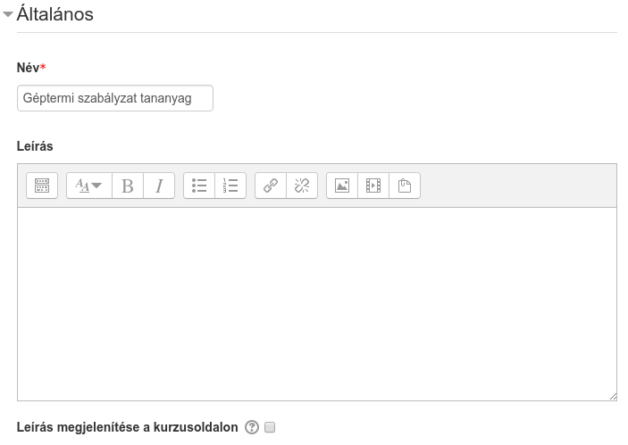
Itt adhatjuk meg a tananyag nevét és leírását. Amennyiben kijelöljük a Leírás megjelenítése a kurzusoldalon opciót, akkor a kurzusoldalon a tananyag címe alatt megjelenik a leírás is.
- Szokásos modulbeállítások
-

Itt állíthatjuk be, hogy a tanulók láthatják-e a tananyagot / tevékenységet. Akkor érdemes elrejteni, amikor egy már elérhető kurzushoz adunk hozzá új tartalmat.
Továbbá itt rendelhetünk technikai azonosítószámot a tartalomhoz.
- Elérhetőség korlátozása
-
Beállíthatjuk, hogy bizonyos tevékenység elvégzéséhez kössük egy másik tevékenység megkezdésének lehetőségét. Például csak akkor tudjon a tréningre jelentkezni, ha sikeres a volt a tesztje. A tartalmat látja a tanuló, de nem tudja elindítani, le van szürkítve addig, amíg a feltételek nem teljesülnek.

- Tevékenység végrehajtása
-
Ezzel azt tudjuk szabályozni, hogy a tananyag akkor legyen csak elérhető ha egy másik tevékenységet már teljesített a tanuló. Ehhez szükséges a teljesítés nyomonkövetés (lásd később).
- Dátum
-
A Dátum '-tól' és az '-ig' dátumokkal adhatjuk meg, hogy az adott tananyagot vagy tevékenység mikortól vagy meddig lehet megtekinteni.
- Osztályzathoz kapcsolódó feltétel
-
Egy másik tevékenységben szerzett pontszámhoz tudjuk kötni az elérhetőséget. Például akkor indíthatja el csak a tesztet a felhasználó, ha a tananyagot 80%-ra teljesítette.
- Felhasználói profilhoz kapcsolódó feltétel
-
Valamely felhasználói profilmező teljesülő feltételt állíthatsz be.
- Korlátozáskészlet
-
Egy korlátozás csoportot tudunk felvenni, melyek között vagy kapcsolat is lehet.
A következő képen beállított előfeltételekre láthatunk példát:

Tevékenység teljesítése
A tevékenység teljesítésénél azt tudjuk megadni, hogy mikor vesszük teljesítettnek a tanuló tevékenységét a tartalomban. Ekkor a tanuló is látja a tartalom elvégzési állapotát, illetve ezt fel tudjuk használni majd kurzusszintű teljesítéshez.
| Ez az opció csak akkor elérhető, ha a kurzusnál bekapcsoltuk a teljesítés nyomonkövetését (). |
A teljesítés típusai a következők:
-
sikeres: zöld pipa
-
sikertelen: piros pipa
-
teljesített: kék pipa (ilyenkor csak azt tudjuk, hogy befejezte)

Nem minden tevékenység tudja az állapotot sikeresre / sikertelenre állítani, van ami csak egyszerűen teljesítettre állítja magát (kék pipa).
Azt, hogy mit állíthatunk be, tartalomtípustól függ, mert nem biztos, hogy minden tartalom küld pontszámot (osztályzatot). De vannak opciók, melyeket általában minden tevékenységnél meg lehet adni.
- A tanulók ezt a tevékenységet kézzel mint teljesítettet jelölhetik meg
-
Ha ezt választjuk a Teljesítés nyomonkövetése mellett, akkor a tanulónak kézzel kell bepipálnia, hogy ő megnézte az adott tananyagot. Ilyenkor ez a bizalomra épül.
- A tevékenységet teljesítettként jelöli meg, ha a feltételek teljesültek
-
Ha ezt választjuk, a tevékenységtípustól függő opciókkal adhatjuk meg a teljesítéshez szükséges feltételeket.
A következő képen a Lecke tevékenység beállításait láthatjuk:
Néhány opció:
- A tanulónak a tevékenység teljesítéséhez a tevékenységet meg kell tekinteni
-
Ekkor csak azt várjuk el, hogy a tanuló megnyissa a tananyagot, például amikor letölt egy PDF-et, de nem tudjuk, hogy el is olvasta-e.
- A tanulónak a tevékenység teljesítéséhez osztályzatot kell kapnia
-
Olyan tevékenységek esetén érhető el, melyeknél valamilyen pontszámot szerez a felhasználó (például teszt). Ezzel csak azt mondjuk meg, hogy pontot kell, hogy szerezzen, de nem írjuk elő, hogy mennyit (például a teszteknél elő lehet írni).
- Teljesítés előírt időpontja
-
Egy dátum, mely megadható, de a tanulók nem látják. Ez csak egy infó, ami a Tevékenység végrehajtása kurzusriportban jelenik meg.
Fontosabb tananyag / tevékenység típusok
A következőkben részletesebben ismertetjük a legszélesebb körben használt tevékenységtípusokat és beállítási lehetőségeiket:
Tananyag
Tananyag hozzáadásával letölthető fájlokat vagy több fájlból álló állományokat, például e-learning tananyagokat - nem SCORM-os - tehetünk a tanulóknak elérhetővé.
| Több fájl feltöltése esetén mindig meg kell adnunk egy indító állományt (amiből csak egy darab lehet), például egy HTML oldal és a hozzá tartozó képek esetén indító állományként magát a HTML fájlt kell megadnunk. |
Tananyag létrehozása és beállításai
Miután a kurzusunk oldalán bekapcsoltuk a szerkesztési módot, a Tevékenység vagy tananyag beszúrása segítségével hozhatjuk létre a Tananyagot.
A Hozzáadás gombra kattintva megadhatjuk a Tananyag paramétereit.
- Általános
-

Itt adhatjuk meg a tananyag nevét és leírását. Amennyiben kijelöljük a Leírás megjelenítése a kurzusoldalon opciót, akkor a kurzusoldalon a tananyag címe alatt megjelenik a leírás is.
- Tartalom
-
Itt tölthetjük fel a kívánt fájlokat.
- Mappa létrehozása
-
Átláthatóbbá tehetjük a fájlokat, ha azokat mappákba szervezzük. Mappát létrehozni a Mappa létrehozása ikonnal tudunk.
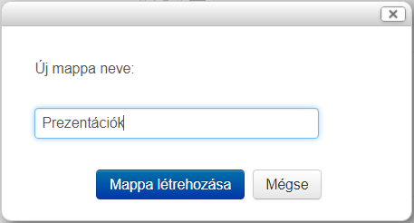
Miután létrehoztuk, egyszerűen kattintással belelépünk, majd elvégezzük a fájl feltöltést a megszokott módon. A mappákba további almappákat is létrehozhatunk.
-
A feltöltő felület morzsa (breadcumb) menüje segít eligazodni, hogy éppen melyik mappában vagyunk.

- Több fájlból álló állomány - például tananyag - feltöltése
-
Töltsük fel a kívánt anyag zip fájlját.
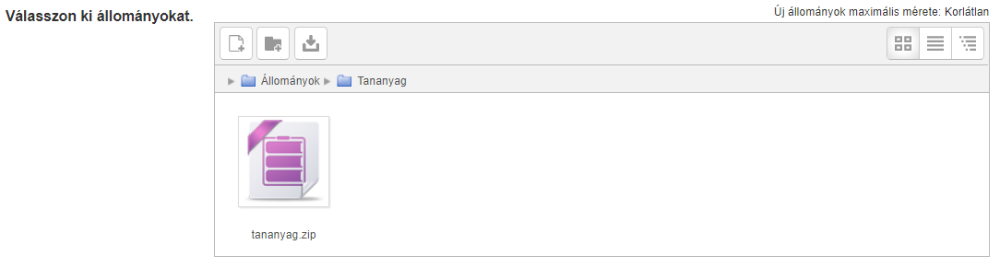
-
Ezután kattintsuk rá és válasszuk a Kicsomagolás opciót.
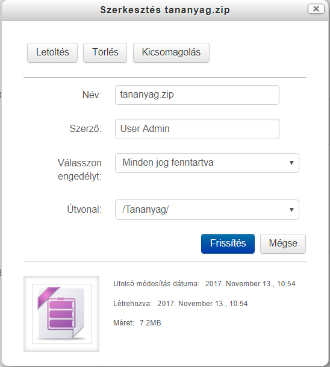
-
-
Ezután már csak az indító fájlt kell megadnunk. Kattintsunk a kiválasztott fájlra, majd a Fő állomány beállítása gombra.

-
- Megjelenítés
-
Itt állíthatjuk be, hogy hogyan viselkedjenek a fájlok, ha a tanuló rájuk kattint. Például, hogy megnyíljanak vagy letöltse őket a saját gépre.
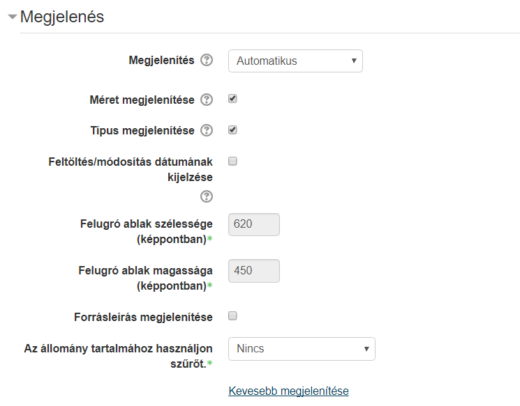
Lecke
Lecke tevékenység alkalmazásával egyszerű, interaktív e-learning tananyagokat hozhatunk létre. Lehetőség van a lineáris tartalmak mellett elágazásos tartalmakat előállítani, amiknél a bejárási út a tanuló válaszaitól függ.
| Elágazásos tartalomként dolgozhatunk fel például szitációs feladatokat, ahol a döntések függvényében többféle végkimenetele lehet az anyagnak. |
A lecke megtervezése
Mielőtt elkezdjük feltölteni a leckénket tartalommal, mindig gondoljuk át annak szerkezetét, a tartalmi elemek sorrendjét, a kérdések típusát és az esetleges elágazásokat. Bonyolultabb, elágazásos tartalmakat érdemes lerajzolni. A tervezéssel sok időt takarítunk meg magunknak.
Pár ötlet, hogy mit gondoljunk át
-
Mi a lecke célja? (például ismeretátadás, gyakorlás stb.)
-
Ki a célcsoport?
-
Mik a legfontosabb tanulási célok, amiket el akarunk érni.
-
Rendelkezésre állnak-e média elemek? (például kép, hang, videó)
-
Milyen hosszú anyagot szeretnénk?
-
Hány feladatot akarunk?
Lecke tevékenység létrehozása és beállításai
Miután a kurzusunk oldalán bekapcsoltuk a szerkesztési módot, a Tevékenység vagy tananyag beszúrása segítségével hozhatjuk létre a Leckét.

Miután rákattintottunk a Hozzáadás-ra, megadhatjuk a Lecke paramétereit.
-
- Általános
-

Itt adhatjuk meg a lecke nevét és leírását. Amennyiben kijelöljük a Leírás megjelenítése a kurzusoldalon opciót, akkor a kurzusoldalon a tananyag címe alatt megjelenik a leírás is.
- Megjelenés
-
A Megjelenés szekció alatt a lecke lejátszófelületével kapcsolatos beállításokat tudjuk megadni.
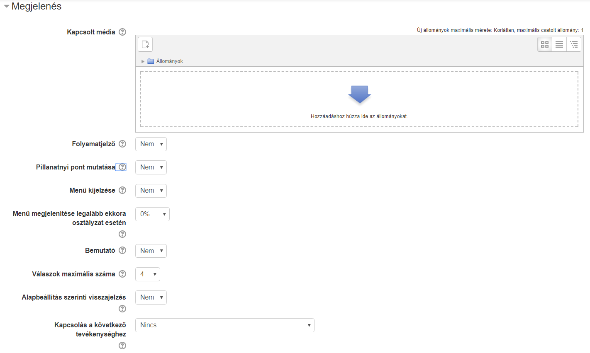
A Kapcsolt média a lecke összes oldaláról megnyitható a Kapcsolt média blokkban.
| Ide töltsünk fel minden olyan hasznos csatolmányt, ami segítheti a megértést. |
-
-
A Folyamatjelző bekapcsolásával a tanuló egy grafikus folyamatjelzőn látja, hogy az anyag hány százalékát végezte el. A folyamatjelző jelenleg csak lineáris tananyagok esetén ad pontos értéket.
A Pillanatnyi pont mutatása opció bekapcsolásával a tanuló nyomonkövetheti, hogy a maximálisan megszerezhetőből hány pontot gyűjtött össze.
A Menü kijelzése bekapcsolásával láthatóvá válik a tartalomjegyzék. Lehetőségünk van beállítani a Menü megjelenítése legalább ekkora osztályzat esetén érték állításával, hogy csak egy bizonyos eredmény fölött váljon láthatóvá, így garanálhatjuk, hogy a tanuló nem ugrik át a tartalomjegyzékből navigálva oldalakat, hanem azokon sorban végighalad.
A Bemutató mód bekapcsolásával a leckét rögzített szélességű és magasságú, testre szabott hátterű bemutatóként jeleníti meg a MOODLE.
A Válaszok maximális száma értéket állítva beállíthatjuk a válaszok maximális számát az egyes kérdéseknél. A beállítás bármikor módosítható, mivel csak azt érinti, amit a tanár lát, nem pedig az adatokat. Nem szükséges egyedi visszajelző szöveget írnunk a kérdésekhez; az Alapbeállítás szerinti visszajelzés bekapcsolásával beépített visszajelző szövegek ("Helyes válasz", "Helytelen válasz") fognak megjelenni.
A Kapcsolás a következő tevékenységhez opcióval egy, a kurzusban lévő másik tevékenységre irányíthatjuk a tanulót a lecke végén.
- Felvehetőség
-
Itt tudjuk megadni, hogy a tanulóink mikortól meddig érjék el a leckét. Az elvégzésnek beállíthatunk időkorlátot, illetve jelszóval védhetjük le a tartalmunkat.
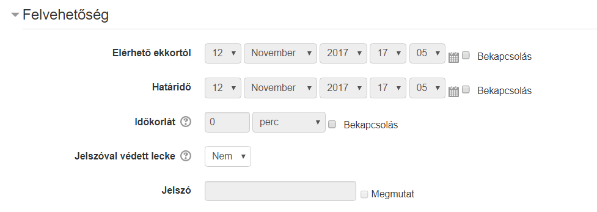
-
-
- Folyamat szabályozása
-
Ebben a pontban a leckére vonatkozó módszertani beállítások érhetőek el.

Az Önellenőrzés engedélyezése opció bekapcsolásával lehetővé tesszük, hogy a tanuló a leckében visszalépve módosítsa válaszait. Az Újrapróbálkozás lehetővé tétele opció bekapcsolásával engedélyezhetjük az újrapróbálkozást. Ennek számát a Próbálkozások maximális száma pontban állíthatjuk.
A Helyes válasz utáni lépés pontban megadhatjuk, hogy a következõ, a kihagyott vagy a még meg nem válaszolt oldalra ugorjon, ha a válasz helyes.
Megjelenítendő oldalak száma: csak akkor állítsuk be, ha az oldalakat különálló gyakorló kártyákként, úgynevezett Flash cardokként akarjuk használni. Ebben az esetben az oldalak nem függnek össze, bármilyen sorrendben elvégezhetőek. Ha ide értéket adunk meg, akkor a tanulók ennyi oldal megtekintése után fejezik be a leckét.
-
- Pont
-
Ebben a részben a pontozásra vonatkozó beállítások érhetőek el.

-
Pont: a leckéért maximálisan szerezhető pont.
-
Pont a teljesítéshez: hány pont szükséges, hogy a tevékenység teljesítettként jelenjen meg.
-
Gyakorló lecke: "Igen"-re állítva a tevékenység nem jelenik meg a naplóban.
-
Testre szabott pontozás: "Igen" esetén minden kérdéshez egyedileg állíthatunk be pontot.
-
Leckeismétlés kezelése: amennyiben engedjük a tanulót újra próbálkozni, itt állíthatjuk be a pontszámítás módszerét, például hogy a legmagasabb pontot vagy a pontok átlagát vegye figyelembe a rendszer.
-
Szerkesztés
Miután létrehoztuk a leckénket, különböző tartalmi elemekből állíthatjuk össze azt.
Ha még üres a leckénk, az alábbi listából választva tudjuk létrehozni az első oldalunk.

Amennyiben már vannak meglévő oldalak, a Műveleketek lenyíló mezőjéből kiválasztva tudjuk az új oldalt beszúrni.
Az Összecsukott nézetben a meglévő oldalak címét, típusát és azt látjuk, hogy az oldalról hová lehet eljutni a különböző interakciók segítségével.
Ha a Kibontva fülre kattintunk, akkor az oldalak tartalmát is láthatjuk.
- Oldaltípusok
-
A tanulók a tartalomoldalt és a kérdésoldalt látják a tananyagban. Ezen kívül lehetőségünk van még navigációs oldalakat is beszúrni, amik a tartalmat nem, csak a bejárási utat módosítják. Ilyen például a Tömb vagy az Elágazás vége.
- Tartalomoldal
-
Tartalomoldalakat WYSIWYG szerkesztővel tudunk létrehozni. Megadhatjuk, hogy a Tartalomgombok vízszintesen jelenjenek-e meg, illetve, hogy az oldalunk látszódjon-e a menüben.
A Tartalom résznél hozhatjuk létre a Tartalomgombjaink. Meg kell adnunk a gomb feliratát a Leírás-ban, illetve azt, hogy hova ugorjon a tananyag a gomb megnyomása után. Azt, hogy hány gombot tudunk beállítani a Lecke beállításainál lévő Válaszok maximális száma érték növelésével vagy csökkentésével tudjuk módosítani.

- Ugrás
-
Lehetőségünk van Beállítani relatív (következő oldal, tananyag vége) és abszolút (konkrét oldal) ugrásokat a gombokhoz.
- Kérdésoldal
-
- Feleletválasztós
-
Megadhatjuk a kérdés nevét és szövegét. A Feleltválasztós jelölőnégyzet bekapcsolásával több helyes választ is megadhatunk (többválasztós feladat). Értelemszerűen ha üresen hagyjuk, csak egy jó választ állíthatunk be.
Azt, hogy hány választ állíthatunk be itt is, a Lecke beállításainál lévő Válaszok maximális száma értékétől függ.
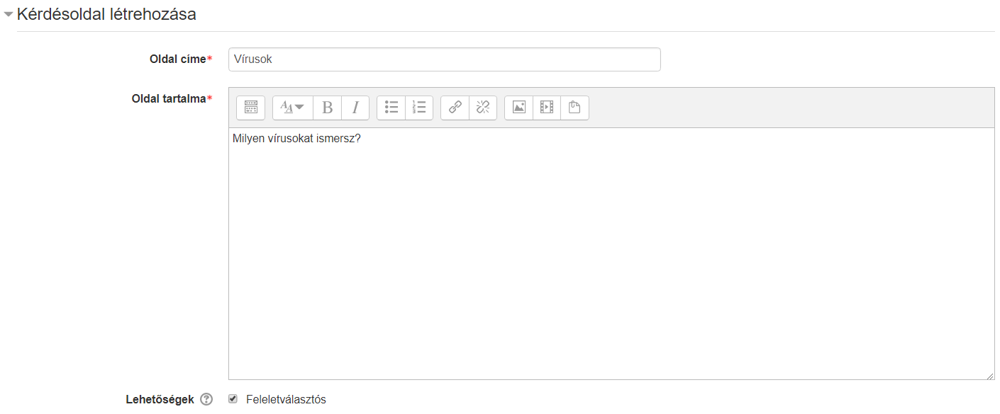
A Válasz mezőkben adhatjuk meg a válaszlehetőségeket. A Tanuló válasza mezőben adhatunk meg egyedi visszajelző szövegeket. A Válasz 1 mindig jó választ tartalmaz. Ha ezen kívül szeretnénk még jó válaszokat megadni, akkor azoknak a válaszoknak az Ugrás lenyíló mezőjét állítsuk a Válasz 1-el megegyezőre, például jó válaszok esetén a Következő oldalra ugrik.
Egyedi pontszám csak akkor állítható, ha a Lecke beállításainál a Testre szabott pontozás lehetőséget bekapcsoltuk.
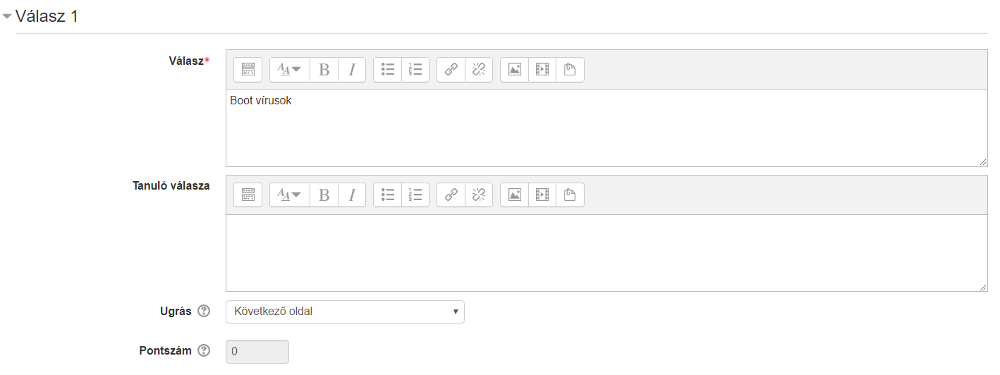
- További kérdés típusok
-
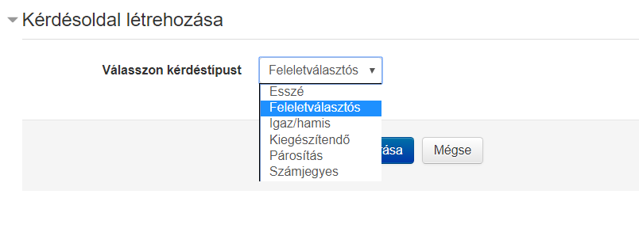
-
Esszé: Hosszú szöveges válasz, amelyet a tanár értékel ki.
-
Igaz/hamis: Hasonló, mint a feleletválasztós kérdés, csak a válaszok száma 2-re korlátozott.
-
Kiegészítendő: Szövegkiegészítős feladat egy vagy több üresen hagyott hellyel.
-
Párosítós: Szavak, képek, számok párosítása.
-
Számjegyes: A feladat megoldásnak egy számot vár a felhasználótól.
-
- Kérdések importálása
-
Meglévő fájlból importálhatunk kérdéseket, megegyező módon a Kérdésbank kérdéseinek importálásával. -
- Tömb
-
A Tömb akkor hasznos, ha egy kérdéscsoportot akarunk létrehozni, például egy több kérdésből álló tesztet, ahol a kérdések sorrendje véletlenszerű. A Tömb elejét a Tömb beszúrása a végét a Tömb végének hozzáadásával tudjuk jelölni.
Érdemes először a kérdéseket létrehozni, amelyek tömbbe akarunk rendezni, és utána hozzáadni a Tömb elejét és végét jelző szakaszhatárokat. - - Elágazás vége
-
Egy navigációs oldal, amely egyetlen ugrást tartalmaz. Egy szakasz, például egy fejezet végét jelölhetük vele.
Jelentések
A jelentések fülön Áttekintés és Részletes statisztika nézetben van lehetőségünk a tanulók eredményeit megtekinteni.
Esszék pontozása
Amennyiben a lecke esszékérdést tartalmaz, itt tudjuk értékelni.
Teszt (vizsga)
A Moodle teszt modulja sok opcióval rendelkezik, emiatt elég rugalmas. Különböző kérdéstípusokat állíthatunk be, előre összeállított kérdésekből véletlenszerűen is tud választani a program, magától ki tudja értékelni a teszteket, a diák akár többször is próbálkozhat.
Magát a funkcionalitást 3 fő részre bonthatjuk szét, ezek a következők:
-
kérdések összeállítása
-
a kiírás paramétereinek beállítása
-
eredmények riportozása
Kérdésbankok
A tesztkérdések kérdésbankokba kerülnek be. Ez azért jó, mert így építhetünk magunknak egy tesztkérdés tárat, majd az egyes vizsgákhoz ezen kérdésekből válogathatunk kérdéseket.
A kérdésbankok különböző objektumokhoz tartozhatnak:
-
- az adott teszt tevékenységhez:
-
a kurzuson belül található teszt tevékenységhez. Ilyenkor a kérdésekhez csak az adott teszt tesztsora fér hozzá.
- kurzushoz
-
ha a kurzuson belül több Teszt vagy Lecke tevékenység van, ezekhez felvehetünk a kurzus kérdésbankjából kérdéseket.
- kurzuskategóriához
-
a kurzuskategóriában található kurzusokban elérjük a kurzuskategória kérdésbankját.
- rendszer szinthez
-
a rendszer összes kurzusában felhasználhatjuk az ezen a szinten lévő kérdéseket.
A következő ábra a kérdésbankok elhelyezkedésének lehetőségét mutatja:

Itt pedig egy valós példát láthatunk a Moodle-ból:
Az egyes pontok jelentése:
-
A Géptermi szabályzat kurzus alatt található Vizsga teszthez tartozó kérdésbank
-
A Géptermi szabályzat kurzushoz tartozó kérdésbank
-
Az IT biztonság kategóriához tartozó kérdésbank
-
Az IT kategóriához tartozó kérdésbank
-
A legmagasabb szinten az alaprendszer található
Az alaprendszer a legmagasabb szinten van, az itt található kérdések a rendszer minden kurzusában felhasználhatóak lesznek.
| Érdemes a kérdéseket legalább a kurzushoz tartozó kérdésbankba felvenni, így azok újrafelhasználhatóak lesznek, ha egy új vizsgát akarunk majd kiírni. |
| Amikor módosítunk egy kérdést a kérdésbankban, a kérdést felhasználó tesztekben is azonnal látszik a módusulás, viszont ha az eredményt befolyásoló módosulás történik, akkor a vizsgát újra kell pontozni. Erről később lesz szó a riport-oknál. |
| Amennyiben törlünk egy kérdést a kérdésbankból és azt felhasználtuk már tesztben, akkor a teszből nem fog törlődni a kérdés. |
Kérdésbank kategóriák
A különböző kérdésbank szinteken belül felvehetünk kategóriákat is, így még átláthatóbb lesz a kérdésbankunk.
| A kérdésbank kategóriák az átláthatóságon kívül azért is jók, mert az adott vizsga összeállításánál meg tudjuk mondani, hogy adott kategóriából hány véletlenszerű kérdést ajánljon fel. |
A kategóriák szerkesztéséhez nyissunk meg egy kurzust a alatt, majd a válasszuk a menüpontot.
Itt tudunk új kategóriát létrehozni, alapadatokat módosítani, illetve kategóriát törölni.
Az új kategória létrehozásánál a Felettes kategória lenyíló menüben megadhatjuk, hogy ki legyen a kategória szülője. Itt ugyanúgy megtalálhatjuk a fent említett kérdésbank szinteket.

| A Fent azt jelenti, hogy az adott szinten lévő kérdésbank legfelsőbb szintű kategóriája lesz az újonnan létrehozott. |
Kérdések kézi létrehozása
Ha készen vagyunk a kategóriákkal, akkor a kattintva elkezdhetjük feltölteni őket kérdésekkel.
A kérdéskategória kiválasztása lenyíló ablakban kiválaszthatjuk, hogy melyik kategóriába szeretnénk a kérdéseket létrehozni. Ezután az Új kérdés létrehozása gombra kattintva megadhatjuk a kérdés típusát.
A most következőkben a feleletválasztós kérdésen keresztül mutatjuk be a legfontosabb kérdésbeállításokat.
-
- Feleletválasztós
-
- Kérdés neve
-
A kérdést azonosító név.
Fontos, hogy A Kérdés nevének ne a kérdés szövegét adjuk meg, hanem valami azonosítót, mert ez fog minden listában látszani. Hosszú kérdéseknél, ahol csak az első 3 szó látszana, majdnem lehetetlen lesz rájönni, hogy melyik kérdésről van szó.
- Kérdés szövege
-
Képpel, médiával fűszerezhető formázott szöveg.
- Alapjegy
-
Alapértelmezésben minden kérdésnél 1, ennek segítségével adhatunk súlyt egy-egy fontosabb kérdéseknek a vizsgán belül.
- Általános visszajelzés
-
A kérdés kitöltése után megjelenő visszajelző szöveg.
- Egy vagy több válasz?
-
Ez már konkrétan Feleletválasztós kérdéstípus paramétere, megadhatjuk, hogy egy vagy több helyes válasz tartozik-e a kérdéshez.
- A válaszlehetőségeket keverje össze?
-
A kérdés válaszainak sorrendje minden kitöltőnél véletlenszerű lesz. Nagyban csökkenti a csalás lehetőségét.
- Válaszlehetőségek számozása?
-
Megjelenési beállítás
- Válaszok
-
Itt vehetjük fel az egyes válaszokat. Minden válaszlehetőség alatt van egy lenyíló mező, amiben állítható, hogy az adott válasz mennyit ér. Ennek a mezőnek természetesen csak több válasz esetén van jelentősége.
Mínusz százalékok is beállíthatóak! Erre azért van szükség, mert ha 4 válaszból 2 jó és erre a kettőre 50% - 50%-ot állítok be, akkor is 100%-ot fog a rendszer adni, ha mind a 4 lehetőséget kiválasztottam. Érdemes tehát a rossz válaszokra büntető pontokat adni, -50%-ot, így ha mind a 4-et kiválasztja, az eredménye arra a feladatra 0. Mínusz pontot nem kaphat a feladatra.
Akkor jár a maximális pont (100%), ha a két jó választ jelölte csak be. Ha 2 jó választ és egy rosszat, vagy ha csak egy jó választ (100% - 50% ill. 50%) jelölt, akkor a maximális pont felét kapja. Ha minden választ bejelölt, akkor a két jó válaszért megkapja a maximumot, de a két rossz miatt -100%-ot le is vonunk, így az elért pontszáma 0.
Az egyes válaszokhoz megadhatunk egyedi visszajelzést, ami akkor jelenik meg ha az adott választ jelölte be a tanuló. Pl. "Ez a válasz azért nem helyes, mert…"
- Egyesített visszajelzés
-
Milyen üzenet jelenjen meg a visszajelzéskor teljesen jó, részben jó, illetve helytelen válaszok esetén. Pl. ha rossz a válasza, akkor kiírhatjuk, hogy hol találja az ide vonatkozó tananyagrészt, amit érdemes átnéznie.
-
-
- Többszöri próbálkozás beállításai
-
Ha kérdéseit Adaptív üzemmód mellett futtatja és a résztvevő többször próbálkozhat a kérdés helyes megválaszolása érdekében, akkor ez a beállítás szabályozza a levonásokat egy-egy hibás válasz esetén. A levonás a kérdés összpontszámának százalékos aránya, így ha egy kérdés három pontot ér és a levonás 0,333333, a résztvevő az első helyes próbálkozására 3, a másodikra 2, a harmadikra 1 pontot kap.
Ezt az üzemmódot gyakoroltatásnál, gyakorló teszteknél alkalmazzuk, semmiképp sem vizsgahelyzetben.
- Címkék
-
Jelenleg nincsenek használva a rendszerben az itt megadott címkék.
-
-
-
- Igaz-hamis
-
A feleletválasztós kérdések egyszerű formája, mely csak két választási lehetőséggel rendelkezik: igaz és hamis válasszal.

-
-
-
- Kiegészítendő kérdés
-
Szabadszöveges válasz. Több válaszlehetőség is megadható.
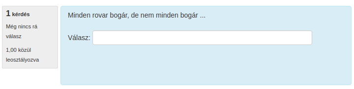
-
- Számjegyes
-
Numerikus válasz, kezel mértékegységeket is, illetve hibahatárt is be lehet állítani.

- Esszé
-
Kifejtős kérdés, csak tanári értékeléssel pontozható.

-
-
- Párosító
-
Egyszerű párosítás.
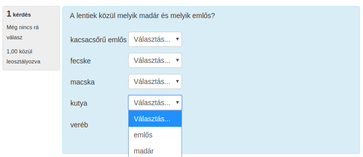
- Véletlenszerű kiegészítő párosító
-
Ugyanaz, mint a Párosító, viszont a kérdéseket és a hozzájuk tartozó lehetőségeket a kérdésbank azonos kategóriájában szereplő Kiegészítendő kérdés típusú kérdésekből gyűjti össze.
-
-
-
- Beépített válaszos (kitöltő)
-
Szövegkitöltő úgy, hogy a szövegbe beágyazhatóak beírós és választós beviteli mezők.

- Válassza ki a hiányzó szavakat
-
Szövegkitöltős választási lehetőségekkel.

-
- Elhúzás szövegbe
-
Szövegkiegészítős feladat úgy, hogy az egyes válaszlehetőségeket drag&drop-al lehet behúzni.
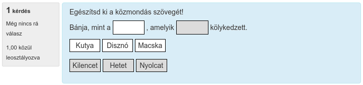
-
-
- Elhúzható jelölők
-
Képre a megfelelő helyekre kell behúzni szöveges címkéket.

-
-
-
- Képre húzás
-
Képet lehet képre húzni.
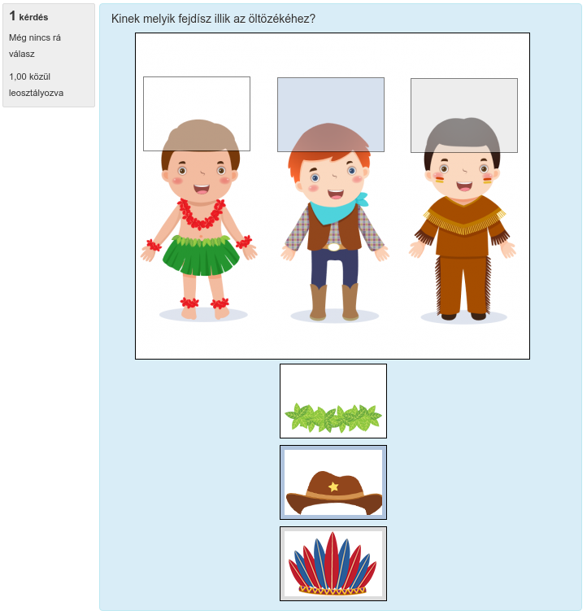
-
-
-
- Egyszerű számításos
-
Képlet eredménye adható meg úgy, hogy a képletben szereplő változókat véletlenszerűen generálja a rendszer.
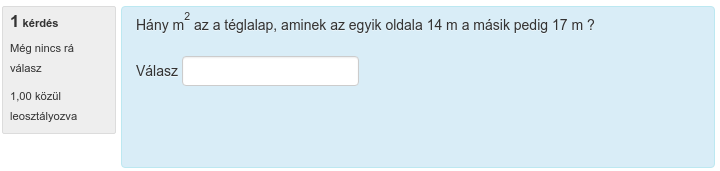 - Számításos
-
Képlet eredménye adható meg úgy, hogy a képletben szereplő változókat véletlenszerűen generálja a rendszer. További beállítási lehetőségeket ad az Egyszerű számításos-hoz képest.

- Számításos feleletválasztós
-
Képlet eredményét több érték közül választhatja ki a tanuló.
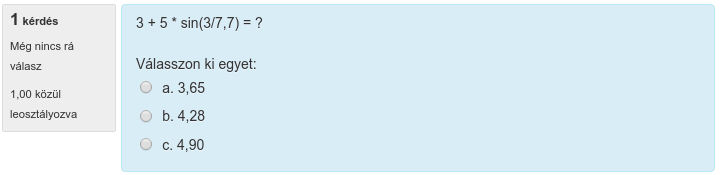
-
-
- Leírás
-
Segítségével plusz információkat szúrhatunk be a tesztlapra.
Kérdések importálása
A kérdések Moodle felületén történő felvételén kívül van lehetőségünk külső forrásból importálni kérdéseket. Több formátumot támogat a Moodle, mi az Excel-ből való importálás lépéseit fogjuk ismertetni.
Kérdések importálása Excel-ből
Segítségül fogjuk hívni az Excel sablont, mely makrók segítségével készít Moodle GIFT formátumú tesztet, amit ezután importálhatunk a Moodle-ba.
A munkafolyamat a következő:
-
Excel sablon feltöltése kérdésekkel
-
Az Excelből GIFT formátum előállítása
-
A létrehozott GIFT formátumú fájl importálása a Moodle-ba
| Minden kérdésnél opcionálisan megadhatjuk a Question Name mezőt, ez szolgál a kérdés könnyű azonosítására az adminisztrációs felületen. Ez alapján tudjuk majd pl. kategorizálni a kérdéseket a Moodle-ban. |
A QUESTION lesz a kérdés szövege. Ezt kötelező megadnunk.
| A QUESTION mezőben ha félkövér formázást adunk egy szövegrésznek, az a Moodle-ban is félkövér lesz. |
Ezután a kérdéstípus a válaszok megadási módjától függ majd. A sablon segítségével a következő kérdéstípusokat vehetjük fel:
-
Igaz-hamis
-
Egyválasztásos
-
Többválasztásos
-
Rövid válasz
-
Az ANSWER1 mezőbe igaz esetén T-t írjunk, hamis esetén F-et.
-
Az ANSWER2 mezőt hagyjuk üresen.
-
A GRADE1 és GRADE2 mezőt nem vesszük figyelembe.
-
A FEEDBACK1 mezőbe írjuk a helyes válasz esetén megjelenített visszajelző szöveget (opcionális), a FEEDBACK2-be kerül a helytelen válasz esetén megjelenített visszejelző szöveg (opcionális).
-
Legalább az ANSWER1 és az ANSWER2 megadása kötelező.
-
A helyes válasz Grade-jénél +100%-ot állítsunk be, a többi válasz esetén 0%-ot.
-
Legalább az ANSWER1 és az ANSWER2 megadása kötelező.
-
Legalább két válaszhoz 0-nál nagyobb Grade-et adjunk meg, az összegüknek +100%-nak kell lennie.
-
A többi válasznál a Grade-nek 0-nak vagy nullánál kisebbnek kell lennie.
| Amennyiben többválasztós kérdésnél a rossz válaszoknál 0% van megadva, akkor a Set the grade of all incorrect answers (grades less than or equal to 0) to -100% legyen bejelölve az Excel sablonban, mert egyébként ha minden választ bejelöl, akkor is megkaphatja a maximális pontszámot. További információ: Mínusz százalékok |
-
Legalább az ANSWER1 és az ANSWER2 megadása kötelező. Ezekbe kerülnek az alternatív megoldások
-
Minden válasz Grade mezője legyen nullánál nagyobb, de egy válasznál legyen +100%
Miután feltöltöttük az Excel-t a kérdésekkel, exportáljunk belőle GIFT formátumot. Ehhez kattintsunk az Excel-ben a menüpontra.

|
Amennyiben nem jelenik meg a Bővítmények menüpont, engedélyezzük a makrókat! 
|
Ezután adjuk meg a fájl nevét (pl. kerdesek.txt), majd kattintsunk a Mentés gombra. Ha minden rendben volt a kérdésekkel, megjelenik az összesítés:
Ezután nyissuk meg az elmentett kerdesek.txt-t Windows Jegyzettömbben, majd a válasszuk a menüpontot. A mentés ablakban a Kódolás-nál válasszuk ki az UTF-8-ot, majd kattintsunk a Mentés gombra.
Az így létrehozott fájlt ezután tudjuk importálni a Moodle-ba.
A GIFT fájl importálásához nyissunk meg a kurzust a alatt, majd a válasszuk a menüpontot.
-
Válasszuk ki a Gift forma-t.
-
Töltsük fel a létrehozott
kerdesek.txt. -
Kattintsunk az Importálás gombra. Ezután ha az importálás sikeres volt, a kérdésbankban megtaláljuk újonnan importált kérdéseinket.
| Ha meg akarjuk adni, hogy a kérdések mely kategóriába legyenek importálva, ezt az Általános szekció alatt találjuk, ami alapértelmezetten rejtett. |
Teszt (vizsga) létrehozása
Miután létrehoztuk / importáltuk kérdéseinket a kérdésbankba, létrehozhatjuk a tesztsort.
Nyissunk meg egy kurzust és kapcsoljuk be a szerkesztési módot a Szerkesztés bekapcsolása gomb segítségével, majd kattintsunk a Tevékenység vagy tananyag beszúrása linkre a megfelelő témában. A megjelenő ablakban válasszuk a Teszt tevékenységtípust.

A megjelenő űrlapon adhatjuk meg a teszt paramétereit.
Teszt paraméterei
-
-
- Általános
-

Itt adhatjuk meg a teszt nevét és leírását. Amennyiben kijelöljük a Leírás megjelenítése a kurzusoldalon opciót, akkor a kurzusoldalon tesztsor címe alatt megjelenik a leírás is.
-
- Időmérés
-
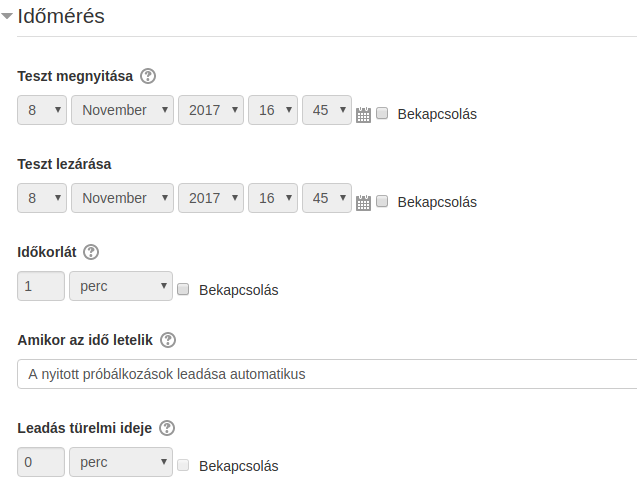
A Teszt megnyitása és Teszt lezárása opciókkal korlátozhatjuk, hogy a felhasználók milyen időszakban nyithatják meg a tesztsort. Látni fogják, hogy ott van, de nem tudják megnyitni.
Az Időkorláttal szabályozhatjuk a teszt kitöltéséhez adott időt, illetve megadhatjuk, hogy mi történjen ha letelik az idő.
Vizsga esetén mindenképpen szükséges időkorlátot megadnunk. Ügyeljünk arra, hogy ez se túl rövid, se túl hosszú ne legyen. Ilyenkor egy folyamatjelző, visszaszámláló időmérő ablak jelenik meg a képernyőn. Ha az időmérő lejár, alapértelmezés szerint a teszt leadása automatikusan megtörténik, függetlenül attól, hogy mennyi válasz született meg akkorra.
Ilyenkor az engedélyezett próbálkozások számát állítsuk 1-re. Gyakorló teszteknél is érdemes a próbálkozások számát limitálni.
- Pótvizsga engedélyezés
-
Amennyiben egy-egy felhasználónak szeretnénk plusz pótvizsga alkalmat biztosítani, azt a alatt tudjuk megtenni. Itt ki tudjuk választani a felhasználót és felül tudjuk írni a tesztnél beállított Engedélyezett próbálkozás számot.
-
-
- Pont
-
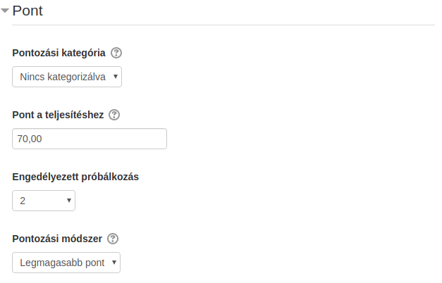
A Pont a teljesítéshez alatt adhatjuk meg, hogy hány pont szükséges a teszt teljesítéséhez. Ha a felhasználó eléri ezt a pontszámot, a tevékenység sikeresre lesz állítva.
Ha a tesztsor összeállításánál a maximális pontszámot 100-ra állítottuk, akkor itt százalékot tudunk megadni.
Ennek a beállításnak csak akkor van hatása, ha a kurzusnál bekapcsoltuk a Teljesítés nyomonkövetését, illetve a tesztnél is megadtuk a Tevékenység teljesítése szekciónál a szükséges beállításokat.
Amennyiben több engedélyezett próbálkozást állítottunk be, a Pontozási módszer segítségével állíthatjuk be, hogy a tevékenységért kapott pont hogyan számítódjon az egyes próbálkozások felhasználásával.
-
-
-
- Teljesítés nyomonkövetése
-
Itt tudjuk beállítani, hogy amennyiben a kurzusnál be van kapcsolva a Teljesítés nyomonkövetés, a teszt teljesítettségéhez mi szükséges.
A felhasználó a kurzus oldalon a teszt mellett található kis négyzetben látja majd az állapotot.
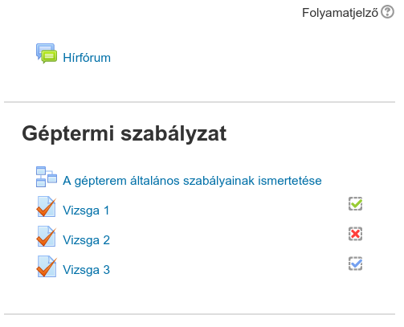
-
- A beállítások:
-
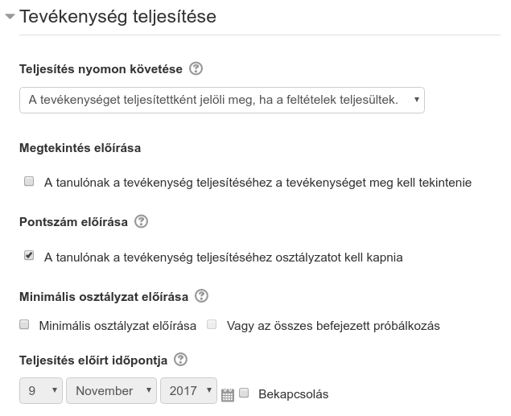
A Teljesítés nyomon követése mellett válasszuk a A tevékenységet teljesítettként jelöli meg, ha a feltételek teljesülnek. opciót. Ekkor a teszt eredményének függvényében lesz teljesített teszt.
Ha csak a A tanulónak a tevékenység teljesítéséhez osztályzatot kell kapnia opciót választjuk, és ha sikeres volt a teszt (elérte a Pont a teljesítéshez pontszámot), egy zöld pipa jelenik meg a teszt mellett, egyébként piros X.
Ha csak a Minimális osztályzat előírását választjuk, akkor csak akkor válik teljesítetté a teszt, ha elérte a minimális pontszámot a felhasználó. Ilyenkor kék pipa jelenik meg a teszt mellett, ami csak annyit jelez, hogy teljesített, nincs hozzá sikeresség, sikertelenség kapcsolva.
Ha a A tanulónak a tevékenység teljesítéséhez osztályzatot kell kapnia és a Minimális osztályzat is be van kapcsolva, és ha eléri a felhasználó a teljesítettséghez szükséges pontszámot, megjelenik a zöld pipa, egyébként nem lesz teljesített a teszt. Ha emellé beállítjuk a Vagy az összes befejezett próbálkozás opciót, és ha lejár az összes lehetőség és egyik sem volt sikeres, piros X jelenik meg a teszt mellett.
- Globális visszajelzés
-
Az megszerzett százaléktól függően meg tudunk jeleníteni a vizsga végén üzenetet a felhasználóknak.
Amennyiben beállítottunk teljesítettséghez tartozó pontszámot, akkor az itt megadott sikeres vizsga százaléka egyezzen meg a beállított ponthatárral.
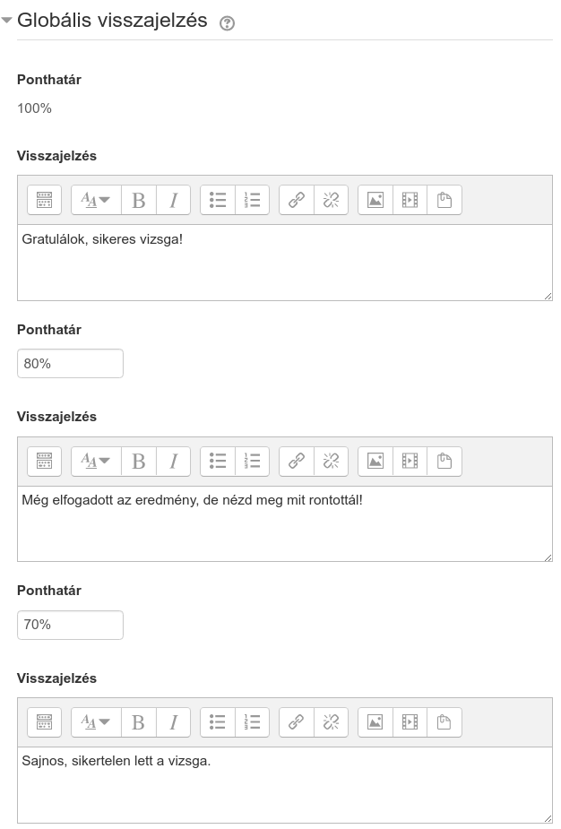
- Elrendezés
-
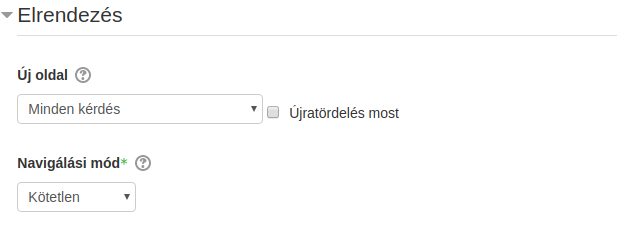
A teszt hosszúságától függően érdemes azt beállítani, hogy hány kérdés kerüljön egy oldalra. 5-8 rövid kérdés kerülhet egy oldalra, de egy 20-30 kérdéses hosszabb gondolkodási időt igénylő tesztnél célszerű egy oldalra csak 1-2 kérdést tenni. Ezzel lehet megelőzni azt, hogy a rendszer tétlenség miatt kiléptesse a résztvevőt.
- Kérdés viselkedése
-

A kérdések válaszainak sorrendjét véletlenszerűre állítva még inkább megelőzhető az, hogy a kollégák egymásnak “lesúgják” a válaszokat. A Kérdéseken belüli összekeverés is ezt a célt szolgálja.
A kérdések viselkedése alatt adhatjuk meg, hogy mikor kapjon a felhasználó kiértékelést az egyes kérdésekről. Vizsga esetén Halasztott visszajelzést használjunk, gyakorló teszteknél használhatunk Azonnali visszajelzést.
- Ellenőrzési lehetőségek
-

Ezek a lehetőségek szabályozzák, milyen adatokat láthatnak a résztvevők egy teszttel való próbálkozás ellenőrzése vagy tesztjelentések megtekintése során.
-
A Próbálkozás alatt található opcióknak akkor van jelentősége, ha azonnali visszajelzés be van állítva. Azt mondja meg, hogy milyen visszajelzési módok jelenjenek meg a kitöltés közben.
-
A Közvetlenül a próbálkozás után azt jelenti, hogy két percen belül attól számítva, hogy a résztvevő „Az összes próbálkozás leadása és befejezés” gombra kattint.
-
A Később, amíg a teszt elérhető azt jelenti, hogy ezt követően, de még a teszt lezárási időpontja előtt.
-
A teszt lezárása után pedig azt jelenti, hogy azt követően, hogy a teszt lezárási időpontja letelt. Ha a teszthez nincs lezárási időpont, akkor ez az állapot sosem következik be.
Az egyes jelölőnégyzetek jelentése:
-
Próbálkozás: Ha be van jelölve, a felhasználó látni fogja, hogy ő mit válaszolt az adott kérdésre.
-
Ha helyes: Ha be van jelölve, a felhasználó látni fogja, hogy helyesen vagy helytelenül válaszolt-e a kérdésre.
-
Osztályzat: Ha be van jelölve, a felhasználó látni fogja, hogy hány pontot ért el a kérdéssel.
-
Egyedi visszajelzés: A válaszlehetőségekhez van lehetőség megadni egyedi visszajelzéseket a kérdésbankban, ami akkor jelenik meg, ha a felhasználó az adott választ jelölte be. Ha ez az "Egyedi visszajelzés" opció be van jelölve, akkor a felhasználó látni fogja ezeket.
-
Általános visszajelzés: Ha be van jelölve, akkor a felhasználó látni fogja a teljes kérdéshez megadott visszajelzés szövegét. Ez pl. háttérinformáció lehet a kérdéssel kapcsolatban.
-
Helyes válasz: Ha be van jelölve, akkor a felhasználó látni fogja, hogy mi lett volna a jó válasz.
-
- Megjelenés
-
Itt tovább finomíthatjuk a megjelenítési beállításokat, pl. bekapcsolhatjuk, hogy a felhasználó képe megjelenjen, illetve a pontszámok hogyan jelenjenek meg.
- Külön megszorítások a próbálkozásokhoz
-
Itt köthetjük jelszóhoz, vagy hálózati címhez (pl. hogy csak egy bizonyos teremből legyen elérhető) a tesztünket.
- Kérdések felvétele a tesztbe
-
Miután beállítottuk a teszt paramétereit, a menüponttal juthatunk a tesztsor összeállításához.

Itt a Hozzáadás linkre kattintva adhatunk a tesztsorhoz kérdéseket:
-
Új kérdés esetén egy teljesen új kérdést hozhatunk létre az általunk kiválasztott kérdésbankban.
-
Kérdésbankból opció segítségével a kérdésbankból tudunk kiválasztani meghatározott kérdéseket.
-
Véletlen kérdés opció segítségével egy kiválasztott kérdésbank kategóriából tudunk megadott számú kérdést hozzáadni a tesztsorhoz.
Amennyiben vizsgánkat több témakörből szeretnénk felépíteni, hozzunk létre kategóriákat témakörönként, töltsük fel őket kérdésekkel, majd adjuk őket hozzá véletlen kérdésként. Hozzunk létre több kérdést, mint amennyit a vizsgába akarunk szúrni, így a vizsgázok nem ugyanazokat a kérdéseket fogják kapni.
Állítsuk be a Maximális pont-ot. Amennyiben százalékos eredményt szeretnénk kapni, ezt állítsuk be 100-ra.
Amikor már a vizsgázás elindult, nem lehet felvenni, illetve eltávolítani kérdéseket a tesztsorról.
-
Eredmények riportozása
Pontok
Amikor a vizsgához tartozik már eredmény, a menüpont alatt tudjuk lekérni és exportálni az ezekhez tartozó pontszámokat.
A listában minden próbálkozást - még a folyamatban lévőket is - láthatunk az egyes kérdésekért kapott pontokkal és az összesített pontszámmal. A Mi szerepeljen a jelentésben szekció alatt tudjuk megadni, milyen próbálkozások jelenjenek meg a listában.

A Próbálkozások szerzője mellett választhatjuk ki, hogy mely felhasználók próbálkozásai jelenjenek meg. Amennyiben azt szeretnénk, hogy a kurzus összes hallgatója megjelenjen attól függetlenül, hogy volt-e próbálkozása, válasszuk a beiratkozottak, akik esetleg próbálkoztak a teszt megoldásával.
A Próbálkozások jellemzése mellett válasszuk a Lejárt és Befejezte opciókat, amennyiben azt szeretnénk, hogy csak a leadott próbálkozások jelenjenek meg.
Amennyiben egy felhasználótól csak egy próbálkozást szeretnénk megjeleníteni, akkor válasszuk a Felhasználónként legfeljebb egy próbálkozás megjelenítése opciót. Ilyenkor a teszt beállításainál megadott Pontozási módszer szerinti próbálkozás fog megjelenni. Amennyiben ott Utolsó próbálkozás-t jelöltünk be, itt is ez fog megjelenni.
| Ha minden próbálkozás megjelenik egy felhasználótól, a pontozott próbálkozás meg lesz jelölve a listában. |
Amennyiben valamiért egy-egy próbálkozást törölni szeretnénk, ezt A Kiválasztott próbálkozások törlése gomb segítségével tehetjük meg.
- Újrapontozás
-
Amennyiben a vizsgasorban módosítottunk egy kérdésben és a módosítás hatással van a felhasználók pontszámára, akkor újrapontozhatunk minden próbálkozást a Mindet újrapontozza gomb segítségével. Lehetőségünk van csak bizonyos próbálkozásokat újrapontozni a A kiválasztott próbálkozások újrapontozása segítségével.
Válaszok
Amennyiben nem az egyes kérdésekre kapott pontokra vagyunk kíváncsiak, hanem a felhasználók által adott válaszokra, ezt a menüpont alatt tudjuk lekérni.
A Mi szerepeljen a jelentésben alatt a Pontoknál részletezett módon van lehetőségünk beállítani, hogy mely próbálkozásokat akarjuk látni.
A Megjelenítési lehetőségek alatt tudjuk szabályozni, hogy a felhasználó válaszán kívül meg akarjuk-e jeleníteni a kérdés szövegét, illetve azt, hogy mi volt a helyes válasz.
Statisztika
A alatt különböző érdekes statisztikákat kaphatunk a vizsgáról és annak kérdéseiről.

A Teszt adatai alatt egy összesítő jelentést találhatunk a próbálkozásokról.
A Tesztszerkezet elemzése alatt az egyes kérdésekről kaphatunk érdekes infókat, így láthatjuk, hogy mely kérdéseinket kell esetlegesen még fejlesztenünk.
| Pl. a Véletlen találgatás pontszáma azt jelenti, hogy a felhasználók, ha csak találgatnak, hány pontot érhetnek el a kérdéssel, az Eszközmutató azt mondja meg, hogy az adott kérdést a felhasználók hány százaléka válaszolta meg jól. A diszkriminiációs index minél magasabb, annál jobb, azaz akkor jó egy kérdés, ha azok a tanulók, akik ezt a kérdést jól válaszolták meg, a teljes teszten is jól szerepeltek. Tehát nem egy olyan kérdés, amit tudás nélkül is meg lehet válaszolni. |
Kézi pontozás
A alatt van lehetőségünk az esszé kérdéseket pontozni, illetve akár az automatikusan pontozott kérdések pontszámát is felülírhatjuk.
SCORM
A Moodle támogatja a SCORM (Sharable Content Object Reference Model) szabványt, ami egyrészt ajánlást ad a tartalom technikai csomagolásához, másrészt leírja, hogy milyen haladási információkat küldhet a tartalom a keretrendszernek.
Egy SCORM tananyag tanulási objektumokból, azaz SCO-kból (Sharable Content Object) épül fel, amelyek külön-külön tudnak haladási információkat küldeni az LMS-nek. Ilyen haladási információ, például hogy mennyi időt töltött egy-egy felhasználó az SCO-ban, milyen eredménnyel zárta azt, illetve milyen belső interakciókat hogyan oldott meg.
|
Ez a szabvány elavult mind technológiában, mind funkcionalitásban. A legfrissebb verziója is 2004-es. A Moodle a SCORM 1.2-t támogatja, ami a 2004 előtti verzió, a 2004-et már nem is fogja. Helyette a SCORM-ot kiváltó xAPI-ra helyezik a hangsúlyt: https://experienceapi.com/overview/ A SCORM-ban az egyes tanulási objektumok (SCO) közti navigációt is az LMS szolgáltatja (és ezt támogatják is a keretrendszerek), viszont ennek kötöttsége miatt a tananyagokat mostanában nem külön SCOnként, hanem egy SCOs tananyagként állítják elő. Az LMS által szolgáltatott navigáció esetén például nincs lehetőség tananyagon belüli kereszthivatkozásokra, keresésre stb. |
A funkcionalitást 2 fő részre bonthatjuk fel, ezek a következők:
-
SCORM csomag feltöltése és beállítása
-
eredmények riportozása
SCORM csomag feltöltése és beállítása
Miután a kurzusunk oldalán bekapcsoltuk a szerkesztési módot, a Tevékenység vagy tananyag beszúrása segítségével tölthetünk fel SCORM tananyagot.
Miután rákattintottunk a Hozzáadás-ra, megadhatjuk a tananyag paramétereit.
-
- Általános
-

Itt adhatjuk meg a tananyag nevét és leírását. Amennyiben kijelöljük a Leírás megjelenítése a kurzusoldalon opciót, akkor a kurzusoldalon a tananyag címe alatt megjelenik a leírás is.
- Csomag
-

Itt tudjuk feltölteni a SCORM csomagot.
- Megjelenés
-
A Megjelenés szekció alatt a tananyag-lejátszóval kapcsolatos beállításokat tudjuk megadni.
A Csomag megjelenítése alatt meg tudjuk adni, hogy a tartalom új ablakban nyíljon-e meg. Ha az új ablakot választjuk, alatta sok opcióval szabályozhatjuk az ablak paramétereit.
A böngészők popup-blocker opciója miatt nem ajánljuk, hogy új ablakban nyíljon meg a tartalom.
Belépési oldal
Amikor a tanuló megnyitja a tananyagot, akkor még a tartalom megjelenése előtt egy belépési oldal jelenik meg, ahol információt kap az eddigi próbálkozásairól.
A belépési oldalról a tanuló elindíthatja a tananyagot Előzetes megtekintés módban. Ilyenkor nem kap pontszámot, csak meg tudja tekinteni a tananyagot. Ezt ki is tudjuk kapcsolni az Előzetes megtekintés kikapcsolása segítségével. Ilyenkor csak a Szokásos mód lesz elérhető.
Azt, hogy ez a belépési oldal megjelenjen-e, A tanuló kihagyja a tartalmi struktúra oldalát opcióval tudjuk szabályozni.
A Kurzusstruktúra megjelenítése a belépési oldalon opcióval megjeleníthetjük a tartalomjegyzéket a belépési oldalon. Ennek csak akkor van értelme, ha nem 1 SCO-ból áll a SCORM csomag.
A Próbálkozás állapotának megjelenítése opció szabályozza, hogy az eddigi próbálkozások információi megjelenjenek-e.
Lejátszó
A belépési oldalról a tanuló a lejátszóba kerül át, ezzel kapcsolatosan is beállíthatunk néhány dolgot.
Kurzusszerkezet megjelenítése a lejátszóban opcióval szabályozhatjuk, hogy hol jelenjen meg a tartalomjegyzék. Amennyiben a tananyag csak 1 SCO-ból áll, ezt kapcsoljuk ki.
A Navigálás megjelenítése opciónak is csak akkor van értelme, ha a tananyagunk nem rendelkezik beépített tartalomjegyzékkel, egyéb esetben kapcsoljuk ki. A funkció segítségével a tartalomjegyzéken kívül kapunk még egy panelt, amivel előre-hátra navigálhatunk a tartalomhierarchiában.
-
- Felvehetőség
-
Itt tudjuk megadni, hogy a tanulóink mikortól meddig érjék el a tananyagunkat.
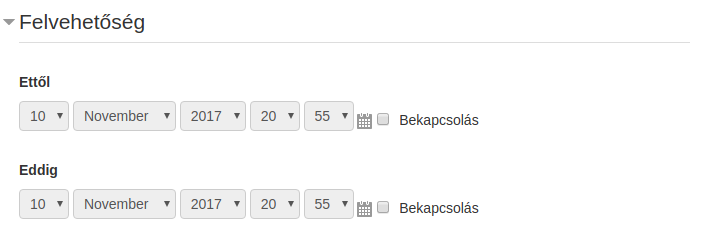
- Pont
-
A Pontozási módszer alatt adhatjuk meg, hogy egy próbálkozás után hogyan számítódjon a pontszám az egyes tanulási objektumok által küldött pontszámokból.
-
Tudásegységek: Ekkor a teljesített tanulási objektumok száma lesz a megszerzett pontszám
-
Legmagasabb pont: A tanulási objektumok által küldött pontszámokból a tananyag a legmagasabbat kapja meg.
-
Átlagpont: A tanulási objektumok által küldött pontszámokból vett átlag lesz a tananyagra kapott pont.
-
Összes pont: Az tanulási objektumok által küldött pontszámok összegét kapja meg a tanuló.
Amennyiben a tananyag küld pontszámot (
cmi.score), válasszuk az Összes pont opciót. Ez egy és több tanulási objektumos tananyag esetén is jó választás. Amennyiben nem küld pontot, akkor csak a Tudásegységek opciót tudjuk választani, amennyiben szükségünk van pontszámra.
-
- Próbálkozások kezelése
-
Itt adhatjuk meg, hogy egy tanuló hányszor futhat neki egy tananyagnak, illetve a próbálkozásaiból melyik számítson bele a pontszámba.
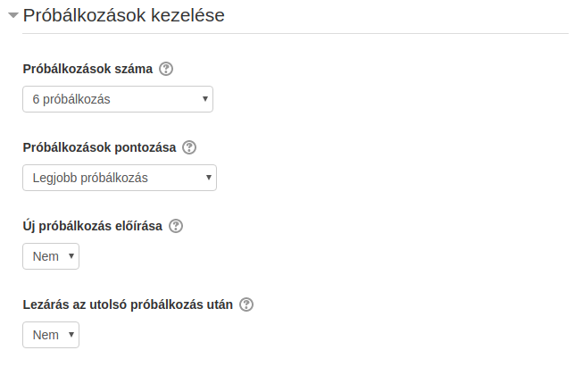
Egy próbálkozás addig tart, amíg be nem fejezte azt a tanuló sikeres vagy sikertelen eredménnyel, de alapértelmezésben bármikor kezdhet új próbálkozást. Ezt kikapcsolhatjuk az Új próbálkozás előírása opció Igen-re állításával. Ilyenkor addig nem kezdhet új próbálkozásba, amíg az előzőt le nem zárta.
A Lezárás az utolsó próbálkozás után segítségével letilthatjuk a tananyag megnyitását, ha a felhasználó elérte a maximális próbálkozásszámot, de ezt nem ajánljuk.
- Kompatibilitás
-
Itt a SCORM csomaggal kapcsolatos technikai finomhangolásokat végezhetjük el.
Ha egy tananyagunk nem küld
cmi.core.lesson_statusállapotot, akkor a Befejezés előírása opcióval ezt megtehetjük.Több SCOs tananyag esetén automatikusan tudunk léptetni, miután egy tanulási objektumot már befejezett a tanuló. Ehhez kapcsoljuk be az Automatikus folytatás opciót.
Amennyiben tananyagunk nem küld sűrűn
LMSCommit()hívást, kapcsoljuk be az Automatikus leadás opciót, így csökkentjük a lehetséges adatvesztés mértékét akkor például ha a tanuló bezárja a böngészőt.
- Tevékenység teljesítése
-
Itt tudjuk beállítani, hogy amennyiben a kurzusnál be van kapcsolva a Teljesítés nyomonkövetés, a tananyag teljesítettségéhez mi szükséges.
Amikor a tananyagot teljesítette a felhasználó, megjelenik egy pipa a tananyag címe mellett, illetve a kurzusriportokban is teljesített lesz a tevékenység.
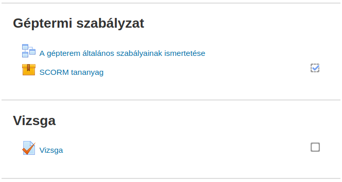
Ha a SCORM csomag által küldött információk alapján automatikusan teljesítetté szeretnénk tenni a tananyagot, a Teljesítés nyomon követése alatt válasszuk a A tevékenységet teljesítettként jelöli meg, ha a feltételek teljesültek. opciót.
Ha a Pontszám előírása opciót kiválasztjuk, a tevékenység teljesített lesz, ha a tanuló pontszámot szerez. Viszont ha a Minimális pontszám előírása-nál nem adunk pontszámot, bármekkora pontszámot el fog fogadni a teljesítettséghez, ezért ezt is adjuk meg ilyenkor.
Az Előírás állapota alatt adhatjuk meg, hogy akkor is teljesített legyen a tananyag, ha a SCORM csomag Átment (
completed) vagy Teljesítve (passed) állapotot küld. Viszont arra figyelni kell, hogy több SCOs tananyag esetén ha az első SCO teljesített lesz, akkor már az egész tananyagot teljesítettnek veszi a Moodle.Ha feltöltjük a tananyagunkat a Scorm Cloud-ra, le tudjuk tesztelni, hogy milyen SCORM adatokat küld a csomag: https://cloud.scorm.com
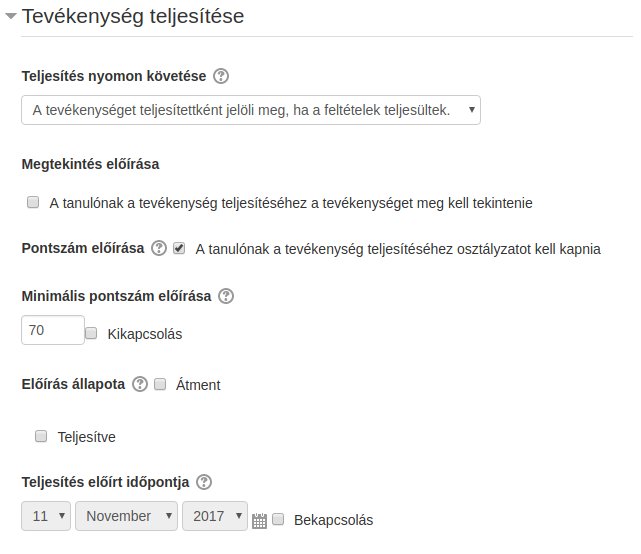
Osztályozónapló
Az osztályozónapló segítségével állíthatjuk össze, hogy a kurzus tevékenységei által küldött pontszámok hogyan jelenjenek meg a pontozói jelentésben és hogyan számítódjon a kurzus összpontszáma.
Beállítás
A beállításokat egy kurzus megnyitása után a alatt érthetjük el.
| Ilyenkor a bal oldali menüben átkerülünk egy Osztályozás kezelése menücsoportba, ahol a kurzus pontozással kapcsolatos további beállításait és lekérdezéseit érhetjük el. |

Az egyes elemek mellett található Szerkesztés gombra kattintva tudjuk módosítani a súlyozást, szorzót adhatunk meg stb…
A Kurzus összegezve melletti Szerkesztés gombra kattintva egyedi kalkulációt adhatunk meg, ami alapján a kurzus összpontszáma számítódni fog.
| Ezek a lehetőségek egyetemi környezetben használhatók jól, ahol a félév végi jegyekhez szükséges összpontszámba az egyes tevékenységek különböző súllyal vagy szorzóval számítanak be. |
Vannak olyan tevékenységtípusok, melyeknél be lehet állítani, hogy ne pontszámot küldjenek, hanem egy skálán megadott értékelést. Ilyen skála lehet például: "nem felelt meg", "megfelelt", "tökéletes". Ilyenkor ez jelenik meg a pontozói jelentésben.
Az osztályozónaplóba lehetőség van Eredményelemet felvenni, mely egy skálán megadott értékeléssel jelzi a tanuló teljesítményét a kurzuson. Ennek értéke is kalkulációval számolható.
Lekérdezések
Pontozói jelentés
Miután megnyitottunk egy kurzust, a Pontozói jelentést a menüpont segítségével érhetjük el. Ugyanezt a lekérdezést érjük el a alatt.
A jelentésben láthatjuk a kurzus összes tanulója által a kurzus egyes tevékenységeiben és összesen elért pontszámát.
| A jelentés az Osztályozónapló beállítása felületen megadott struktúrában és számítási szabályok szerint jeleníti meg a pontokat. |
A tevékenységek címe és a tanulók neve mellett található ceruza segítségével átkerülünk az Egyszeres nézet felületre, ahol a tanuló vagy a tevékenység összes tanulójának pontját felül tudjuk írni.
| Amennyiben százalékosan is meg szeretnénk jeleníteni a pontszámokat, ezt megtehetjük az felületen az Osztályozási tétel beállításai alatt. Ez csak az adott kurzusra vonatkozólag adja meg a beállítást, az Alapbeállítások módosítása linkre kattintva módosíthatjuk a portálszintű beállítást. |
A pontozói jelentés Excel exportjához válasszuk az menüpontot. Itt szintén be tudjuk állítani, hogy százalékos eredményt is akarunk-e látni, illetve megadhatjuk, hogy mely tevékenységek kerüljenek be a táblázatba.
Előzménynapló
Ebben a jelentésben a kurzus tevékenységeiben történt pontszerzéseket listázhatjuk, illetve exportálhatjuk.
Lehetőségünk van időintervallumra, felhasználóra szűrni, illetve láthatjuk a felülírt pontszámokat is.

Eredményjelentés
A kurzusban használt Eredmények kurzusátlagairól ad információt.
Áttekintő jelentés
Egy adott felhasználó összes kurzusában elért pontszámát láthatjuk.
| Ezt a felületet látja a tanuló is amikor a fejlécben lévő lenyíló menüben kiválasztja a Pontok menüpontot. |

Egyszeres nézet
Egy tevékenység összes tanulójának vagy egy tanuló összes tevékenységének pontszámait tudjuk listázni és felülírni a felületen.
Felhasználói jelentés
Egy adott felhasználó a kurzus tevékenységeiben szerzett pontjait tudjuk megtekinteni.
| Ezt a felületet látja a tanuló is amikor a fejlécben lévő lenyíló menüben kiválasztja a Pontok menüpontot, majd rákattint egy kurzusra. |
Kurzusteljesítés nyomonkövetése
Ahogy a tevékenységeknél be tudtuk állítani, hogy milyen feltételek teljesülésekor tekinthetjük a tartalmat elvégzettnek, ugyanezt megtehetjük a kurzusoknál is.
| Ez az opció csak akkor elérhető, ha a kurzusnál bekapcsoltuk a teljesítés nyomonkövetését (). |
| A kurzusteljesítés számítása a háttérben történik, ami azt jelenti, hogy miután teljesült a feltétel - ami alapján a kurzust teljesítettre kell állítani-, kell várni valamennyit, amíg teljesített lesz a kurzus. |
Beállítás
Miután kiválasztottunk egy kurzust szerkesztésre, a alatt tudjuk megadni a teljesítéshez szükséges feltételeket.
Általános
Az Általános alatt tudjuk megadni, hogy a lentebb megadott feltételeknek együtt kell teljesülniük vagy bármelyik teljesülhet közülük.

Feltétel: Teljesített tevékenységek
Itt tudjuk megadni, hogy a kurzusban szereplő tevékenységek teljesítettségétől függően állítsuk teljesítettre a kurzusunkat.
| Itt csak azok a tevékenységek fognak megjelenni, melyeknél beállítottuk a teljesítettség nyomonkövetését (Tevékenység teljesítése) |
Itt szintén meg tudjuk mondani, hogy minden tevékenységet teljesítenie kell a tanulónak vagy elegendő bármelyiket közülük.
Feltétel: Más kurzusok teljesítése
Itt ki tudjuk választani azokat a kurzusokat, melyek teljesítése előfeltétele a mi kurzusunknak.

Feltétel: Dátum
Ez akkor használható, amennyiben a kurzusról a tanulóink bármikor lejelentkezhetnek és a kurzusunk teljesítettségét ahhoz szeretnénk kötni, hogy egy megadott időpontig nem jelentkeztek le.

Feltétel: Beiratkozás időtartama
Ugyanaz, mint a Dátum, de itt nem konkrét dátumhoz kötjük, hanem a kurzus tagság hosszához.

Feltétel: Kiiratkozás
Akkor lesz teljesített a kurzus, ha a tanuló kiiratkozik róla.
Feltétel: Kurzusosztályzat
A tevékenységek által szolgáltatott pontszámokból számítódik a kurzus pontszáma (lásd: Osztályozónapló). Itt tudjuk megadni, hogy hány ponttól teljesített a kurzusunk.
Feltétel: Saját teljesítés kézzel
Ha ezt bekapcsoljuk, akkor a kurzust a felhasználó kézzel teljesítettnek jelölheti.
| Ahhoz, hogy ezt meg tudja tenni, adjuk hozzá a kurzusoldalhoz az Önálló teljesítés blokkot. |
Feltétel: Kézzel teljesítette más
Itt adhatjuk meg, hogy milyen szerepkörű felhasználók tudják kézzel teljesítetté jelölni a kurzust egy-egy tanulóhoz.

| Ha több szerepkört adunk meg és köztük és (Minden kiválasztott szerep osztályozzon, ha a feltétel teljesül) kapcsolatot adunk meg, akkor a kurzusteljesítést minden kiválasztott szerepkörnek jóvá kell hagynia. |
Miután beállítottuk, a beállított szerepkörű felhasználók a oldalon tudják a kurzust készre állítani.
Lekérdezések
Kurzusteljesítés
A alatt láthatjuk, hogy a kurzus tanulói teljesítették-e a kurzus tevékenységeit, illetve a teljesítési feltételeknek megfelelően a kurzust. Továbbá az igazgatók, illetve a tanárok — amennyiben a Feltétel: Kézzel teljesítette más be van állítva — itt tudják jóváhagyni a teljesítést.

Jelentések
A legfontosabb kurzushoz kapcsolódó jelentéstípusokat az Osztályozónapló lekérdezések és Kurzusteljesítés lekérdezések fejezetben láthattuk. Ezen kívül van még néhány jelentés a kurzuson belül, ezeket néhány szóban bemutatjuk.
Naplók
Részletes, rendszerszintű műveletlistát kérhetünk le, illetve szűrhetünk. Itt látunk minden olyan műveletet, amit a tanulók a portálon végeztek, külön eseményként láthatjuk például a kurzuslieratkozást, vizsgapróbálkozásokat, stb…
Élő naplózások
Ugyanaz, mint a Naplók, csak folyamatos frissítéssel.
Kurzustevékenység
Összesítve láthatjuk, hogy melyik tevékenységet hányszor nézték meg a kurzusban.
Kurzusrészvétel
Meg tudjuk nézni, hogy mely tevékenységeket mely tanuló hányszor tekintette meg, illetve üzenetet is tudunk küldeni nekik.
Tevékenység végrehajtása
Itt láthatjuk, hogy mely tanuló mely tevékenységet teljesítette. Pirossal van megjelölve az a tevékenység, melyhez a megadott Teljesítés előírt időpontja már elérkezett.

Statisztika
Napokra és szerepkörökre lebontva láthatjuk, hogy hányan tekintették meg a kurzust.
Felhasználókezelés
A fejezetben bemutatjuk, hogyan tudunk:
-
felhasználókat létrehozni
-
keresni
-
rendszerszintű jogosultsággal felruházni
-
globális csoportot létrehozni
-
felhasználókat Excelből importálni
A Moodle több lehetőséget biztosít a felhasználóink felvételére a rendszerbe. Például össze tudjuk kötni Active Directory-val, támogat önregisztrációt stb. Ezeket Hitelesítési eljárásoknak hívjuk. Az alapértelmezett, kézzel létrehozott felhasználók hitelesítési eljárása a Kézi fiókok. További hitelesítési eljárás beállítások a alatt érhetőek el.
Felhasználók listázása és új felhasználó létrehozása
A portál felhasználóit listázni, illetve új felhasználót kézzel felvenni a alatt tudunk.

A felületen a felhasználókat több mező alapján tudjuk szűrni (), egyszerre több szűrőfeltételt is megadva.
A felület alján található Új felhasználó hozzáadása gombra kattintva hozhatunk létre új felhasználót. Itt meg kell adnunk a kötelezően kitöltendő mezőket (felhasználónév, jelszó, email, vezetéknév, keresztnév), és ezeken kívül további opcionális mezőket is kitölthetünk, például képet tölthetünk fel a felhasználóhoz, beállíthatjuk az alapértelmezett nyelvét vagy az időzónát.
| Amennyiben tartozik a felhasználóhoz szervezetünkön belül valamilyen egyedi azonosító, azt az Azonosítószám mezőben adjuk meg. |
| Egyedi profilmezőket is felvehetünk a |
Tömeges felhasználói műveletek
A alatt kiválaszthatunk több felhasználót, majd a kiválasztott felhasználókkal csoportos műveletet hajthatunk végre, pl. törölhetjük őket egyszerre vagy üzenetet írhatunk nekik.
A alatt feltölthetünk egy .zip fájlt, ami tartalmazza a felhasználónk képeit. A képek fájlneve lehet pl. a felhasználók felhasználóneve.
Globális csoportok
A globális csoportok segítségével a felhasználókat csoportokba sorolhatjuk, mely csoportokat később felhasználhatjuk pl. kurzusoknál történő beiratkoztatáshoz.
| Globális csoportot létrehozhatunk portálszinten, de létrehozhatunk kurzuskategória szinten is. |
A globális csoportok szerkesztéséhez válasszuk a menüpontot.

A Minden globális csoport alatt láthatjuk mind a rendszerszintű, mind az egyes kurzuskategóriákhoz rendelt csoportokat.
A Globális csoport hozzáadása fül segítségével kézzel létrehozhatjuk a csoportot, de akár Excelből is feltölthetjük a Globális csoportok feltöltése segítségével.
| Excelből való feltöltéskor csak a csoportok alapadatait tudjuk feltölteni, itt a felhasználókat nem tudjuk hozzárendelni. A hozzárendelést Excelből a Felhasználók feltöltése menüpont alatt tudjuk megtenni. |
A csoportok listájában a Szerkesztés alatt található  gomb segítségével tudjuk a csoport felhasználóit kézzel hozzárendelni.
gomb segítségével tudjuk a csoport felhasználóit kézzel hozzárendelni.
Felhasználók feltöltése
Felhasználók importálása
Felhasználókat szövegfájlból adminisztrátori szerepkörrel tudunk feltölteni. Számos lehetőséget kínál ez a módszer:
-
felhasználókat beiratkoztathatunk több kurzusra, kurzus-specifikus szerepkörökkel,
-
a Felhasználói adatok frissítéséhez a Felhasználói profilban,
-
felhasználók törlése a rendszerből.
Fájlformátum
A szövegfájlnak CSAK vesszővel (vagy más határolójával) elválasztott mezői lehetnek, a szóköz nem megengedett. Az első sor tartalmazza az érvényes mezőneveket. A többi sor (rekord) tartalmaz információkat a felhasználóról.
| Kerüld a speciális karaktereket a mezőinformációkban. Tesztelj egy fájlt csak egy rekorddal egy nagyobb feltöltés előtt. |
| Az importálandó felhasználókat létrehozhatod a szükséges oszlopokkal és mezőkkel Excel (vagy egyéb, csv fájlt generáló) alkalmazásból is. Ezt követően mentsd a fájlt "CSV (vesszővel elválasztva)" típusú állományba. Figyelj az UTF-8 kódolásra! |
Mezők
- Szükséges mezők
username,firstname,lastname,email-
A
username -
Az
email- Jelszó mező
-
A
password-
Ha a jelszó meg van adva a csv fájlban, akkor meg kell felelnie a webhely Jelszószabályzatának.
-
Ha nem adjuk meg a jelszót, a felhasználónak a következő Cron munkában generálódik egy jelszó, amit egy üdvözlő emailben kiküld a rendszer a felhasználónak.
-
| Az üdvözlő email tartalma a nyelvi beállításokban található. |
- Speciális mezők
-
-
oldusername -
deleted -
suspended
-
- Beiratkozást lehetővé tevő opcionális mezők
course1,type1,role1,group1,enrolperiod1,enrolstatus1,course2,type2,role2,group2,enrolperiod2,enrolstatus2- Cohort mező (opcionális)
-
-
cohort1
-
- Rendszerszerep (opcionális)
-
-
sysrole1,sysrole2,sysrole3
-
- Az összes mező
firstname, lastname, username, email, city, country, lang, timezone, mailformat, maildisplay, maildigest, htmleditor, ajax, autosubscribe ,institution, department, idnumber, skype, msn, aim, yahoo, icq, phone1, phone2, address, url, description, descriptionformat, password, auth, oldusername , deleted, suspended, course1, course2, course3, course4Felhasználók feltöltése
-
Hozz létre egy csv fájlt.
-
Válaszd ki a menüpontot.
-
Válaszd ki a fájlt feltöltésre.
-
Kattints az Állomány feltöltése gombra.
-
Kattints a Felhasználók feltöltése gombra.
-
Ellenőrizd az előzetes megtenintési listában a felhasználókhoz tartozó információk helyességét.
-
Kattints a Felhasználók feltöltése gombra.
-
A Felhasználók feltöltésének eredménye oldalon láthatod, hány létrehozott felhasználó került újonnan a felhasználók listájába.
-
Kattints a Folytatás gombra.
-
Visszakerülünk a "Felhasználók feltöltése" oldalra.
Felhasználók feltöltése Globális csoportokba
Többféle lehetőségünk van arra, hogy Globális csoportokba importáljunk felhasználókat.
Az eljárás ugyanaz, mint a Felhasználók feltöltése folyamatban, a mezőnevek között megjelenik a cohort1cohort1cohort1
Létező felhasználók esetén a Típus feltöltése tulajdonságnak a "Csak meglévő felhasználók frissítése" értéket beállítva elegendő a csv fájlban a usernamecohort1
Engedélyek
A Moodle kifinomult jogosultsági rendszerrel rendelkezik, minden egyes művelethez külön jog szükséges, ezeket Engedélyeknek nevezzük. Ilyen pl. egy tevékenység megjelenítési jog, vagy egy feltöltési jog. A felhasználók ilyen engedélyekkel rendelkeznek, de azért, hogy ne kelljen minden felhasználóhoz ezeket az engedélyeket külön megadni, ezeket Szerepekbe csoportosítjuk és a felhasználókhoz ezeket a szerepeket rendeljük hozzá. Különböző szinteken lehet szerepekhez rendelni felhasználókat. Ilyen szint például a portálszint, kurzuskategória vagy kurzus szint.
| A rendszer által szolgáltatott szerepek általában elegendőek, de amennyiben nem, új szerepet tudunk definiálni a alatt. |
A alatt tudjuk meghatározni a Portálszintű rendszergazdákat, illetve a Rendszerszerepek hozzárendelése alatt tudunk Igazgató, illetve Kurzuskészítő joggal felruházni felhasználókat.
| A Rendszerengedélyek ellenőrzése alatt tudjuk lekérdezni, hogy egy adott felhasználónak milyen engedélye van rendszerszinten. De például ha belépünk egy kurzusba, ugyanezt meg tudjuk tenni kurzusszinten a alatt. |
Beiratkoztatás
A fejezetben bemutatjuk, hogyan tudunk:
-
kurzus beiratkoztatási módszereit megadni
-
önálló beiratkoztatást engedélyezni
-
felhasználót kézzel beiratkoztatni
-
globális csoportot beiratkoztatni
-
felhasználók kurzuson belüli szerepét meghatározni
A Moodle több lehetőséget biztosít, hogy a felhasználók be tudjanak iratkozni a létrehozott kurzusokba. A beiratkozással egyrészt a tanulók jogot szereznek a tartalom megtekintésére, másrészt haladási információjuk el lesz tárolva a kurzusnál.
Egy kurzushoz több beiratkoztatási módszert is beállíthatunk, ezt a menüpont alatt tudjuk megtenni.

Alapértelmezésben csak a Kézi beiratkoztatások van bekapcsolva egy kurzusnál, de a szem ikonnal a leszűrkítetteket is engedélyezhetjük, illetve Módszer hozzáadása segítségével további módszereket adhatunk hozzá a kurzushoz. Az egyes beiratkoztatási módszerekhez további beállítási lehetőségek tartozhatnak (fogaskerék ikon).
A fő beiratkoztatási módszerek a következők:
-
Kézi beiratkoztatás
-
Saját beiratkoztatás
-
Globális csoport
| Az adminisztrátorok a alatt további speciális beiratkoztatási módszereket engedélyezhetnek. |
Kézi beiratkoztatás
Ezzel a módszerrel a kurzus tanárai, illetve az igazgatók tudnak kézzel egyenként beiratkoztatni felhasználókat, illetve a beiratkoztatott felhasználókhoz kurzuson belüli szerepet rendelni.
A beiratkozott felhasználók felület megnyitásához kattintsunk a menüpontra.
A felületen egyrészt látjuk a jelenleg beiratkoztatott felhasználókat, másrészt további felhasználókat tudunk beiratkoztatni.
| Ezen a felületen nem csak a kézzel beiratkoztatott felhasználók jelennek meg, a listában látszik, hogy egy-egy felhasználó milyen beiratkoztatási módszerrel került beiratkoztatásra. |
A beiratkozott felhasználóknál a Szerepek alatt láthatjuk a kurzusban betöltött szerepkörüket, illetve a "plusz" ikontra kattintva további szerepeket adhatunk hozzá, illetve a szerepeket meg is vonhatjuk.
Új felhasználó beiratkoztatásához kattintsunk a Felhasználók beiratkoztatása gombra.
A megjelenő felületen a Szerepek hozzárendelése segítségével tudjuk megadni, hogy a beiratott felhasználó milyen szerepet kapjon, majd a Beirat gombra kattintva tudjuk beiratkoztatni a felhasználót.
A Beiratkoztatási lehetőségek alatt például meg tudjuk adni, hogy mikortól legyen beíratva a felhasználó, illetve meddig.
| A felhasználó korábbi osztályzatainak visszanyerése, ha lehetséges opció akkor jó, ha egy felhasználó leiratkozott egy kurzusról, de emiatt elvesztek a kurzuseredményei. Ha úgy íratjuk vissza kézzel, hogy ezt az opciót bejelöljük, akkor a kurzuspontjai újra megjelennek. |
Saját beiratkoztatás
Amennyiben a beiratkoztatási módszereknél engedélyeztük ezt a módszert, a tanulók szabadon fel tudják venni, illetve le tudják adni a kurzust.
A beiratkoztatási módszer beállításainál sok finomhangolást végezhetünk például meg tudjuk adni, hogy meddig iratkozhatnak be a felhasználók, megadhatjuk, hogy csak jelszóval léphessenek be stb.
Alapértelmezésben a tanulók leadhatják a kurzust, viszont amikor újra felveszik, a kurzusosztályzatok nem jönnek vissza. Ilyenkor csak a Kézi beiratkoztatásnál részletezett módon nyerhetjük vissza az osztályzatot. A problémát elkerülhetjük, ha letiltjuk a kurzus leadását akár portál szinten a enrol/self:unenrolself jogosultság megvonásával.
|
Globális csoport
A Beiratkoztatási módszereknél ha a Módszer hozzáadása alatt a Globális csoport szinkronizálása opciót választjuk, akkor portálszintű globális csoportot tudunk beiratkoztani a kurzushoz. Ez azért jó, mert ha például új felhasználó kerül be a csoportba, akkor őt nem kell kézzel beiratkoztatni a kurzusra, hanem automatikusan bekerül a beiratkozottak közé. Ez igaz kiiratkozásra is.
A módszer hozzáadásánál a Globális csoportot kötelező megadni, a többi beállítás opciónális. Megadhatjuk például, hogy a beiratott felhasználók milyen szerepet kapjanak, vagy a kurzuson belül milyen csoportba kerüljenek.
Kitűzők
Áttekintés
A kitűző egy lehetséges módja annak, hogy megünnepeljük, jutalmazzuk az eredményeket, vagy épp ösztönözzük a résztvevőket.
A kitűzők kiválasztott kritériumok alapján szerezhetők meg, illetve adományozhatók.
A kitűzőknek két kategóriája létezik:
-
- Kurzuskitűzők
-
A kurzuson belül létrehozott kitűzök a kurzusba beiratkozott résztvevők számára adhatók, és a kurzuson belül zajló tevékenységekhez kapcsolódnak. Például a kurzuson belüli egy vagy több tevékenység sikeres teljesítése után kap a résztvevő egy kitűzőt.
- Portál szintű kitűzők
-
Jellemzően a portál egészére kiterjedő tevékenységekhez kapcsolódnak ezek a kitűzők. Például három kurzus elvégzése után kap a résztvevő kitűzőt.
Kitűzők kezelése
A kitűzők kezelése lehetséges kurzus vagy portál szinten.
| A kurzus tanárai alapértelmezésben nem férnek hozzá a portál szintű kitűzőkhöz, hacsak nem kaptak rendszerszintű szerepet a kitűzők kezelése képességhez (Kitűző globális beállításainak kezelése). |
Kurzuskitűzők kezelése
| Ahhoz, hogy a tanárok elérjék kurzus szinten a kitűzőket, adminisztrátoként engedélyeznünk kell a menüpont alatt a Kurzuskitűzők bekapcsolása tulajdonságot. |
Tanárként a kurzushoz tartozó adminisztrációs panelen a menüpont kiválasztásával meg tudjuk tekinteni a kurzus alatt elérhető kitűzők listáját, valamint a rájuk elvégezhető műveleteket.
- A kitűzőkön végezhető műveletek
-
- Hozzáférés engedélyezése / kikapcsolása /
-
A hozzáférés engedélyezése és kikapcsolása műveletek elérhetősége a kitűző aktuális állapotától függ. Például ha egy kitűző elérhető a felhasználók számára, megjelenik a ikon.
Amíg nem adunk meg feltételt a kitűzőhöz, addig a hozzáférés engedélyezése ikon sem jelenik meg a kitűzőhöz tartozó műveletek között.
A kitűző hozzáférésének kikapcsolásával a felhasználók elől elrejtve marad a kitűző. Amikor hozzáférhetővé tesszük, előfordulhat, hogy egyes résztvevők máris teljesítik a kitűző által meghatározott feltételeket, ezért azonnal meg is kapják.
- Kitűzők szerkesztése

-
A megszerzett kitűzőt a rendszer zárolja, így egyes beállításait (pl. a feltételeket és a lejáratot) ezt követően nem módosíthatjuk.
- Kitűzők törlése

-
A kitűző törlését a
ikonra klikkeléssel lehet kezdeményezni. Ezt követően választhatunk a törlés módját illetően:
- Kitűzők másolása

-
A másolás ikonra klikkelve a rendszer létrehoz egy másolatot a kitűzőről és megnyitja a másolatot szerkesztésre. A kitűző neve mögé illeszti a 'másolata' szót, így különböztetve meg az eredetitől. A rendszer nem engedi, hogy ugyanolyan névvel egynél több kitűzőt illessünk.
Portál szintű kitűzők kezelése
|
Ahhoz, hogy portál szinten tudjuk használni a kitűzőket, be kell kapcsolnunk az menüpontban a Kitűzők engedélyezése tulajdonságot. Ezt követően megjelenik az menüpont. 
Figure 35. kitűzők bekapcsolása rendszer szinten
|
A kurzuskitűzőknél megismert műveletek érvényesek a portál szintű kitűzőkre is.

Azon kitűzők esetében, ahol a kritériumok között a kézi adományozás szerep található, egy felhasználó egy másik felhasználó számára adhat kitűzőt. A kitűzőt kibocsátó felhasználóknak "moodle / badges: awardbadge" képességgel kell rendelkezniük. A webhely adminisztrátorai a kitűző megadásakor / szerkesztésekor meghatározhatják ezen szerepeket.
Kitűzők használata
Ez a fejezet azt mutatja be, hogyan lehet kitűzőket adni kurzushoz vagy webhelyhez (portál szintű kitűző).
Új kurzuskitűző felvétele
Ha a kurzuskitűzők engedélyezve vannak rendszer szinten, a tanárok kitűzőket tudnak a kurzushoz felvenni.
Amikor új kitűzőt veszünk fel, első körben a kitűző részleteit kell megadnunk.
Részletek
-
- Részletek
-
Meg kell adnunk a kitűző nevét, leírását és fel kell töltenünk egy kitűzőt.
- Az adományozó adatai
-
Ide például megadhatjuk a tanár nevét, mely megjelenik a résztvevőnél a kitűző megjelenésekor. A kapcsolat (pl. email cím) megadása opcionális.
- A kitűző lejárata
-
A kitűző érvényességi idejét adhatjuk meg. Soha nem jár le, egy rögzített időpontban jár le, vagy a kiállítás napja a beállított értéknek megfelelő nap elteltével veszti el a kitűző érvényességét.

Feltételek
A részletek beállítása és elmentése után a kitűző megszerzésének feltételeit adhatjuk meg.

Az alábbi feltételek közül választhatunk:
-
- Kitűző kézi adományozása szerep alapján
-
- Kurzus teljesítése alapján
-

- Tevékenység végrehajtása
-

A feltételek megadása és elmentése után visszakerülünk a kitűzők kezelése oldalra, ahol engedélyeznünk kell a kitűzőnket, hogy a felhasználók meg tudják szerezni.

Üzenetek
Amikor egy felhasználó kitűzőt szerez, értesítést kap ennek eseményéről a Moodle rendszeren belül.

Portál szintű kitűző felvétele
Új portál szintű kitűző felvétele a rendszerbe hasonló a kurzusszintű kitűzőknél megismert folyamatokhoz. A feltételrendszerben van különbség.
- A kitűző kézi adományozása szerep alapján
-
Ugyanaz, mint a kurzuskitűzőnél.
- Több kurzus teljesítése
Ki kell választanunk, mely kurzusoktól tesszük függővé a kitűző megszerzését, és azok milyen feltételekkel vegyenek részt a kiutalásban.
- Profil befejezése
-
Megadhatjuk, hogy a résztvevő mely profiltulajdonságainak kitöltése után kapjon kitűzőt.